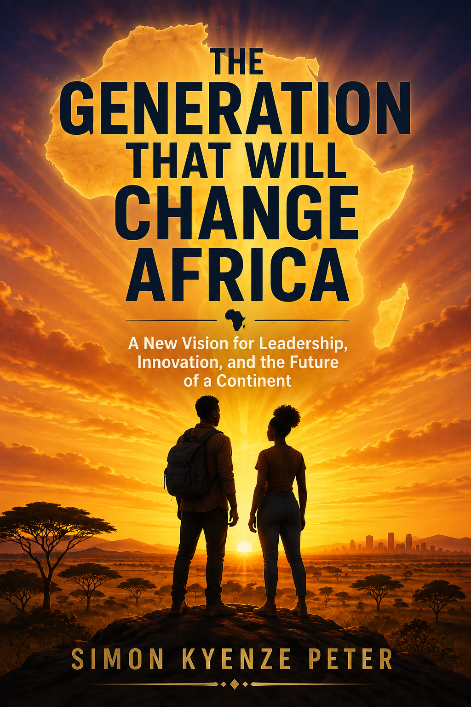
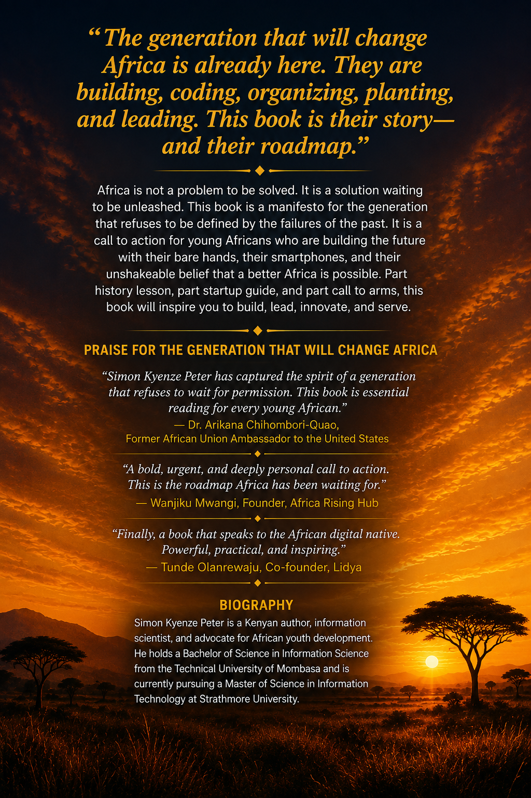

To the young woman in Kibera who dreams of becoming an engineer but has never seen a computer lab.
To the young man in Kano who walks five kilometers every day to charge his phone at a market stall, because he believes the internet will be his university.
To the farmer in rural Tanzania who uses a smartphone to check crop prices, because she refuses to be exploited by middlemen anymore.
To the coder in Lagos who works through the night building solutions for problems that no one else is solving.
To the activist in Khartoum who risks everything to demand accountability from a regime that has stolen her people's future.
To every young African who has been told they are too young, too poor, too unconnected, or too inexperienced to make a difference—and who decided to try anyway.
To my fellow students at Strathmore University, who represent the very best of this generation—brilliant, driven, and unafraid to challenge the status quo.
To my lecturers and mentors who have shaped my thinking and expanded my vision.
To my parents, who sacrificed everything so that I could dream.
To the millions of young Africans who are building the future with their bare hands, their smartphones, and their unshakeable belief that a better Africa is possible.
This book is for you. Because you are not the future of Africa. You are its present. And you are already changing everything.
By Dr. Arikana Chihombori-Quao
Former African Union Ambassador to the United States
I have spent my life advocating for Africa. I have stood in the halls of power in Washington, D.C., and argued for the dignity and potential of this continent. I have traveled to villages and cities across Africa and witnessed the resilience, creativity, and determination of its people. I have seen the worst of what Africa has endured—and the best of what it is becoming.
But nothing has given me more hope than the generation I see rising today.
They are different. They are not burdened by the same fears, the same hesitations, or the same deference to the old ways. They are unapologetically African. They are digitally native. They are globally connected. And they are fiercely determined to build a future that honors their heritage while embracing the tools of the modern world.
Simon Kyenze Peter has captured this spirit in The Generation That Will Change Africa. This book is not a theoretical exercise. It is a practical, urgent, and deeply personal call to action. Simon writes as one of them—a young African man who has seen the challenges of our continent and refused to be defeated by them. He writes with the clarity of an information scientist and the passion of a patriot. His ongoing Master's studies at Strathmore University have only deepened his understanding of how technology, information systems, and innovation can transform societies.
What strikes me most about Simon's work is its authenticity. He is not writing from an ivory tower. He is writing from the trenches. He has lived the struggles he describes. He has felt the frustration of a system that fails its young people. He has experienced the transformative power of education and technology. He has witnessed the resilience of his peers. This is not a book written by an observer. It is a book written by a participant—a young African who is actively building the future he describes.
This book challenges us to rethink everything. It challenges the narrative of a "Hopeless Continent" that has been peddled by Western media for too long. It challenges the model of leadership that has failed our people. It challenges the education system that prepares us for a world that no longer exists. It challenges the old Pan-Africanism that stopped at political unity and demands an economic and cultural unity that is fit for the 21st century.
But this book is not just a critique. It is a blueprint. It offers practical solutions—not imported from the West, but rooted in African realities. It celebrates the innovation that is already happening across the continent: in fintech, agritech, healthtech, and education. It shows how the African Continental Free Trade Area can become the engine of economic transformation. It reimagines leadership as service, not sovereignty.
And it calls on every young African to take ownership of their own destiny.
I have met many of the young people Simon writes about. I have seen the glint in their eyes when they talk about their startups, their communities, and their dreams. I have witnessed the quiet determination with which they build, code, organize, and lead. They are not waiting for permission. They are not waiting for rescue. They are building the Africa they want to see.
This book is for them. And it is for everyone who believes in Africa's potential.
Read it. Share it. Act on it. Because the generation that will change Africa is already here. And they will not be stopped.
My name is Simon Kyenze Peter. I was born and raised in Nairobi, Kenya, in a modest home where the prospect of a university education seemed like a distant dream for a long time. My parents worked tirelessly, often sacrificing their own comfort, to ensure that I had access to the one thing they believed could change my life: education.
I remember the day I got my first smartphone. It was a used device, handed down from an older cousin. It had a cracked screen and a battery that lasted barely four hours. But to me, it was a window to the world. I discovered the internet. I discovered that there were courses, books, and ideas that I could access for free. I discovered that I could learn almost anything if I had enough curiosity and determination. That phone changed my life.
I went on to study Information Science at the Technical University of Mombasa. Those years were formative. I learned about data, systems, and the power of information to transform societies. But more importantly, I learned that knowledge is power—but only if it is shared. I also learned that the world was changing faster than our educational institutions could keep up. We were being taught theories developed in Western universities, designed for Western contexts. We were memorizing facts that had little relevance to the challenges we faced. We were being prepared for jobs that were disappearing, not for the opportunities that were emerging.
But I also saw something else. I saw my peers—brilliant, driven, and full of ideas. I saw young people who were not waiting for the system to change. They were building their own solutions. They were starting businesses. They were coding apps. They were organizing communities. They were leading. I saw the generation that would change Africa.
Today, I am pursuing a Master of Science in Information Technology at Strathmore University, one of Kenya's premier institutions of higher learning. My journey from the Technical University of Mombasa to Strathmore has been one of growth, discovery, and deepening commitment to the vision of a transformed Africa. At Strathmore, I have been exposed to cutting-edge research, innovative thinking, and a community of scholars and practitioners who are shaping the future of technology in Africa. I have learned about artificial intelligence, blockchain, cybersecurity, and the ethical implications of technology. I have been challenged to think more critically, to question more deeply, and to dream more boldly.
This book is the result of years of observation, research, conversation, and reflection. It is my attempt to capture the energy, vision, and determination of this generation—and to provide a roadmap for how we can accelerate the transformation that is already underway.
I write this book as a young African, not as an elder or an expert. I write as someone who is still learning, still growing, and still trying to figure out what it means to be part of this generation. I write with humility, knowing that I have not solved all the problems I describe. But I write with urgency, because I believe that the time for talking is over. The time for building is now.
This book is not for everyone. It is for those who are ready to act. It is for those who are tired of waiting. It is for those who are willing to take risks, fail, learn, and try again. It is for the generation that will change Africa—and for everyone who wants to be part of that change.
I invite you to read this book with an open mind and a willing heart. I invite you to question everything, including what I have written. And I invite you to join the movement that is already transforming our continent.
The future is not something we wait for. It is something we build. And we are building it now.
On a humid Tuesday morning in Lagos, a twenty-four-year-old woman named Amara watches a truck loaded with perishable goods navigate the city's infamous traffic. Her phone buzzes. A notification. The truck has arrived at its destination thirty minutes early. The driver is verified. The produce is intact. The farmer who sent the goods receives an instant payment. This is not a government program. This is not a foreign aid project. This is Amara's startup—a logistics platform she built with a laptop, a borrowed internet connection, and a fierce belief that Africa's problems have African solutions. She started with nothing but an idea and a phone. Today, she employs forty people and serves thousands of farmers across Nigeria.
Fifteen hundred miles away in Nairobi, Kevin, a twenty-seven-year-old software engineer, is fine-tuning an algorithm that allows a farmer in rural Kenya to access a micro-loan using only their phone. No bank branch. No collateral. No endless paperwork. Just a farmer, a smartphone, and a financial system designed for the reality of African life—not imported from New York or London. Kevin is a graduate of Strathmore University, where he studied computer science and developed the skills that now power his fintech startup. He credits his time at Strathmore with teaching him not just technical skills, but also the importance of ethical innovation and social responsibility. His platform has now disbursed over five million dollars in loans to smallholder farmers across East Africa.
In Johannesburg, a student collective is organizing. They are not waiting for politicians to address the climate crisis. They are planting urban gardens, installing solar panels on community centers, and building a decentralized database to track air quality in their neighborhoods. They are solving problems because they have to—and because they can. Their gardens now feed hundreds of families. Their solar panels power community centers. Their data is being used by researchers across the continent.
In Kigali, a group of young women is building a platform that connects female entrepreneurs across the continent. They are sharing resources, mentorship, and capital. They are not asking for permission. They are creating their own ecosystem. Their platform now has over fifty thousand users across twenty African countries.
In Accra, a team of developers is using artificial intelligence to diagnose malaria from a smartphone photo. They are not waiting for the government to build more clinics. They are bringing healthcare to the people. Their app has been used over a million times, saving countless lives.
In Dar es Salaam, a young man is using blockchain technology to create a transparent supply chain for the fishing industry, ensuring that small-scale fishermen receive fair prices for their catch and that consumers know exactly where their fish comes from. His platform has increased fishermen's incomes by thirty percent.
In Nairobi, at Strathmore University, students are building solutions that will transform the continent. They are developing AI systems to predict crop yields. They are creating platforms for online learning that reach children in remote areas. They are building apps that connect patients to doctors. They are not waiting to graduate. They are building now.
These are not isolated stories. They are the first whispers of a revolution. A quiet, determined, and utterly transformative revolution that is happening across the African continent. It is being led by a generation that refuses to be defined by the failures of the past, a generation that has looked at the narrative of a "Hopeless Continent" and decided to write a different story.
This book is about that generation.
It is about the young Africans who are not waiting for permission, who are not looking to the West for salvation, and who are not content to inherit a broken system. They are building a new one.
For decades, the global conversation about Africa has been shaped by outsiders—by colonial administrators, by Western journalists, by aid workers, and by politicians who saw the continent as a problem to be fixed or a resource to be extracted. That era is ending. The voices that matter now are African voices. The solutions that work now are African solutions. The future that is coming now is an African future.
This generation is uniquely positioned to architect this new reality. They are connected, digital natives, unapologetically Pan-African, demanding accountability, and redefining success on their own terms.
This book is divided into three parts. Part One examines the identity of this generation and the legacy they inherited. Part Two looks at the key pillars of change: Pan-Africanism, leadership, and innovation. Part Three is the action plan—what must happen next in education, governance, and society.
This is not a book about hope. Hope is passive. This is a book about agency. It is about the choices we make, the systems we build, and the future we create.
The generation that will change Africa is already here. They are building, coding, organizing, planting, and leading. This book is their story—and their roadmap.
The revolution is silent. But it is unstoppable.
The revolution I speak of is not a revolution of guns and violence. It is a revolution of ideas, of innovation, of determination. It is a revolution that is happening in boardrooms and classrooms, in village markets and urban tech hubs, in the minds of young people who refuse to accept the limitations that have been imposed on them.
This generation has grown up in a world that is fundamentally different from that of their parents and grandparents. They have never known a world without the internet. They have never known a world where Africa was not connected to the rest of the globe. They have grown up with smartphones, social media, and access to the world's knowledge.
This has changed everything. It has changed how they see themselves. It has changed what they believe is possible. It has changed what they are willing to accept.
The generation that will change Africa is not waiting for permission. They are not waiting for someone else to solve their problems. They are building solutions themselves.
Consider the story of Amara again. She is not unique. Across the continent, young Africans are building businesses that solve problems. They are creating platforms that connect farmers to markets. They are building apps that provide healthcare information. They are creating online learning platforms that reach children in remote villages.
They are not waiting for governments to provide jobs. They are creating jobs. They are not waiting for foreign aid. They are building self-sufficient businesses. They are not waiting for permission. They are taking action.
This is the new African mindset. It is a mindset of agency, of possibility, of determination. It is a mindset that says: "I can. I will. I am."
In the chapters that follow, I will explore the foundations of this new mindset, the pillars upon which it is built, and the action plan for accelerating the transformation that is already underway.
I will examine the legacy we inherited—the colonial borders, the psychological wounds, the extractive economy—and show how this generation is breaking free from that legacy.
I will explore the power of connectivity, the rise of a new Pan-Africanism, the reimagining of leadership as service, and the innovation engine that is solving Africa's problems with African minds.
And I will lay out a practical action plan for education, governance, and society—a roadmap for building the Africa we dream of.
This is not a book about hope. Hope is passive. This is a book about agency. It is about the choices we make, the systems we build, and the future we create.
The generation that will change Africa is already here. They are building, coding, organizing, planting, and leading. This book is their story—and their roadmap.
The revolution is silent. But it is unstoppable.
Let me take you deeper into the heart of this revolution. It is not happening in the halls of power, where politicians debate and delay. It is happening in the streets, in the markets, in the classrooms, and in the minds of young people.
I think of a young woman I met in a village in rural Kenya. She had no formal education. She had no access to capital. But she had a smartphone and a dream. She started a small business selling vegetables. She used her phone to check market prices. She used social media to find customers. She used mobile money to receive payments. Today, she employs ten people and is building a school in her village.
I think of a young man I met in a refugee camp in Uganda. He had been displaced by conflict. He had lost everything. But he had a laptop and a vision. He started teaching coding to other refugees. He built a platform that connected refugees to remote work opportunities. He is now supporting his family and helping others do the same.
I think of a group of young women in Nigeria who are using technology to fight sexual harassment. They built an app that allows women to report harassment anonymously. They created a support network for survivors. They are changing the culture.
These stories are not exceptions. They are the rule. Across Africa, young people are stepping up. They are taking responsibility. They are building the future.
This is the generation that will change Africa. And they are already doing it.
The revolution I describe is not a single event. It is a process. It is happening slowly, steadily, and inexorably. It is happening in the hearts and minds of young Africans who refuse to accept the status quo.
It is happening in the boardrooms of tech startups, where young entrepreneurs are building solutions to African problems. It is happening in the classrooms of universities, where students are learning to think critically and creatively. It is happening in the villages, where farmers are using technology to improve their yields.
It is happening in the diaspora, where Africans are investing in their home countries. It is happening in the arts, where African musicians, filmmakers, and artists are sharing their stories with the world. It is happening in politics, where young people are demanding accountability and transparency.
This revolution is not about ideology. It is not about political parties or religious affiliations. It is about a fundamental shift in mindset. It is about a generation that has decided to take control of its own destiny.
This generation has seen what the old ways have produced: poverty, corruption, inequality, and instability. They have decided that they will not accept this as their inheritance. They are building something new.
This book is an exploration of that new something. It is an attempt to understand what this generation is building, why they are building it, and how we can all contribute to the transformation.
In the chapters that follow, I will take you on a journey. I will show you the foundations of this new Africa—the identity that this generation is forging. I will show you the pillars—the Pan-Africanism, the leadership, the innovation that is driving change. And I will show you the action plan—the education, the governance, and the social contract that will sustain it.
This is not a book about hope. It is a book about agency. It is about the power of this generation to shape its own future.
The revolution is silent. But it is unstoppable.
I want to pause here and reflect on what this means for you, the reader. If you are a young African, this book is your story. It is a reflection of your experiences, your struggles, your dreams, and your determination. It is a testament to the power of your generation.
If you are not African, this book is an invitation. It is an invitation to see Africa differently. To see the potential, the innovation, and the determination that is often hidden by the narrative of victimhood. It is an invitation to partner with this generation in building a better world.
This book is not a prediction. It is not a prescription. It is an observation. It is a celebration. And it is a call to action.
The generation that will change Africa is already here. They are building, coding, organizing, planting, and leading. They are the architects of a new Africa. And they are inviting us all to join them.
In the chapters that follow, I will explore the foundations, the pillars, and the action plan for this transformation. I will share stories of young Africans who are making a difference. I will offer practical exercises to help you apply the lessons of this book to your own life.
But I will also challenge you. I will challenge you to think differently about Africa. I will challenge you to take responsibility for your own future. I will challenge you to be part of the generation that changes Africa.
The revolution is silent. But it is unstoppable. And it is waiting for you to join it.
Let me leave you with a final thought as we begin this journey together.
I have traveled across this continent. I have met young people in cities and villages, in schools and markets, in refugee camps and tech hubs. I have seen their struggles. I have witnessed their determination. I have felt their hope.
They are not waiting for someone else to save them. They are saving themselves. They are building the Africa they want to see. They are the generation that will change Africa.
I am proud to be one of them. And I am honored to share their stories with you.
Welcome to the journey. Welcome to the revolution. Welcome to the future.
The generation that will change Africa is already here. And it is you.
Reflect on Your Role
Take a moment to reflect on your own role in the transformation of Africa. Write down your thoughts on these questions:
As we move from the introduction into the heart of this book, I want you to carry with you a sense of possibility. A sense that Africa's future is bright. A sense that you have a role to play in making it brighter.
The chapters that follow will challenge you, inspire you, and equip you. They will give you the tools you need to be part of the generation that changes Africa.
But they will also ask something of you. They will ask you to think differently. To act boldly. To take responsibility. To lead.
Are you ready?
Then let us begin.
To understand where this generation is going, we must first understand where it has been. Not to dwell in the past, but to recognize the foundations upon which we build—and to identify the structures that must be dismantled.
Every African alive today was born into a world shaped by forces beyond their control. The borders that divide our nations were drawn in European capitals by men who had never set foot on the continent. The Berlin Conference of 1884–1885 carved Africa into pieces like a cake to be shared among colonial powers. In a matter of months, the future of a continent was decided by diplomats who saw Africans as subjects, not citizens.
There is a story that haunts me. In 1884, as European powers gathered in Berlin to divide Africa, not a single African was present at the negotiating table. The future of millions was decided by people who had never seen an African sunrise, never tasted African soil, never heard an African language spoken. They drew lines on maps with rulers, separating ethnic groups that had coexisted for centuries, uniting rivals who had never been allies, and creating nations that were destined for conflict.
These borders made no sense. The Yoruba people were split between Nigeria, Benin, and Togo. The Somali people were divided among Kenya, Ethiopia, Djibouti, and Somalia. The Ewe people were separated between Ghana and Togo. The Bakongo people were divided between Angola, the Democratic Republic of Congo, and the Republic of Congo. These divisions were not based on any understanding of African realities. They were based on the greed and convenience of European empires.
Today, we still live with these borders. We still bear the consequences of this arbitrary cartography. We speak of Nigeria, Kenya, and Ghana as if they are natural entities, but they are colonial creations. And while we have come to love these nations, we must never forget the violence that brought them into being.
I think about this every time I travel across Kenya. The borders that divide us are artificial. The ethnic tensions that plague us were manufactured. The conflicts that have killed millions were created by colonial divisions. We are still living with the consequences of decisions made by men who had no right to decide our fate.
Before we can fully understand what was stolen from us, we must first understand what we had. The narrative of African inferiority is a lie—a lie deliberately constructed by colonialism to justify its brutality. The truth is that Africa was home to some of the most sophisticated civilizations in human history.
The narrative of African inferiority is a lie—a lie deliberately constructed by colonialism to justify its brutality. The truth is that Africa was home to some of the most sophisticated civilizations in human history.
Let me take you on a journey to the Empire of Mali, one of the greatest civilizations the world has ever known.
In the 13th century, while Europe was struggling through the Dark Ages, the Empire of Mali was flourishing. Founded by Sundiata Keita, the "Lion King," Mali grew to become one of the largest and wealthiest empires in history. At its peak, it stretched from the Atlantic Ocean to the Niger River, encompassing modern-day Mali, Senegal, Gambia, Guinea, Niger, Nigeria, Burkina Faso, and Mauritania.
But it was under Mansa Musa, who ruled from 1312 to 1337, that Mali reached its zenith. Mansa Musa is often described as the richest person in history—and for good reason. His wealth was so vast that it is almost incomprehensible. He controlled the gold mines of West Africa, which produced more than half of the world's gold at the time. But Mansa Musa was not just wealthy. He was a visionary leader who understood that true wealth is not just about gold—it is about knowledge, culture, and civilization.
In 1324, Mansa Musa embarked on a pilgrimage to Mecca that would become legendary. He traveled with a caravan of 60,000 people, including 12,000 slaves, each carrying gold bars. He was accompanied by hundreds of camels carrying gold dust. The procession was so grand that it dazzled the cities he passed through. In Cairo, he gave away so much gold that the price of gold plummeted and took twelve years to recover.
But the pilgrimage was not just about displaying wealth. Mansa Musa brought back scholars, architects, and artists from the Middle East. He used their expertise to build mosques, libraries, and universities. He transformed Timbuktu from a trading post into a center of learning that attracted scholars from across the Islamic world.
Timbuktu became one of the great intellectual centers of the world. At its height, it was home to the University of Timbuktu, which comprised three main mosques—the Sankore Mosque, the Djinguereber Mosque, and the Sidi Yahya Mosque—each housing libraries and schools.
The University of Timbuktu was not a single institution but a network of independent schools, each specializing in different subjects. Scholars studied mathematics, astronomy, medicine, law, philosophy, and theology. They wrote thousands of manuscripts on every imaginable subject. These manuscripts were not just religious texts—they included scientific treatises, philosophical works, legal codes, and historical chronicles.
The scholars of Timbuktu were not isolated from the rest of the world. They corresponded with scholars in Cairo, Baghdad, and Cordoba. They were part of a global intellectual community. They translated and preserved Greek philosophy. They made original contributions to mathematics and astronomy. They produced legal scholarship that is still studied today.
Today, many of these manuscripts survive. They have been preserved in libraries and private collections across West Africa. But they remain largely unknown to the world—and to many Africans. This is a tragedy. These manuscripts are proof that Africa was not a continent of savages. It was a continent of scholars, scientists, and philosophers.
At the same time that Mansa Musa was building Timbuktu, another great civilization was flourishing in southern Africa. The Kingdom of Great Zimbabwe, which existed from the 11th to the 15th centuries, was one of the most impressive civilizations in African history.
The kingdom is best known for its stone architecture. The ruins of Great Zimbabwe, located in modern-day Zimbabwe, include massive stone walls built without mortar. These walls, some of which are over 250 meters long and 10 meters high, are a testament to the engineering genius of the builders.
The most impressive structure is the Great Enclosure, a massive elliptical wall that encircles a complex of buildings. The walls are made of granite blocks cut and fitted together with remarkable precision. The construction required sophisticated engineering knowledge and an enormous labor force.
Great Zimbabwe was not just a building project. It was the center of a trading empire that connected southern Africa to the Indian Ocean trade network. The kingdom exported gold, ivory, and copper, and imported cloth, beads, and ceramics from as far away as India and China. The wealth generated by this trade funded the construction of the stone structures that still stand today.
When European explorers first encountered the ruins of Great Zimbabwe in the 19th century, they refused to believe that Africans had built them. They invented theories about Phoenicians, Egyptians, or even lost civilizations from Atlantis. The idea that Africans could build such structures was simply beyond their imagination.
This racism was not just ignorance—it was willful. The Europeans refused to see African achievement because acknowledging it would undermine the justification for colonialism. If Africans were capable of building civilizations, then they were not inferior. And if they were not inferior, then colonialism was not justified.
In West Africa, the Ashanti Confederacy, which existed from the 17th to the 19th centuries, was one of the most sophisticated states in the region. The Ashanti, located in modern-day Ghana, built a centralized state with complex political structures, a professional army, and a thriving economy.
The Ashanti were masters of goldsmithing and metalworking. They produced intricate jewelry, ceremonial swords, and gold weights that are still admired by collectors today. Their textiles, particularly their kente cloth, are among the most beautiful in the world. Their art, music, and dance were (and remain) highly sophisticated.
The Ashanti had a well-developed legal system. They had courts, judges, and a constitution. They had a system of checks and balances that limited the power of the king. They had a sophisticated administration that managed the affairs of the state.
The Ashanti also had a thriving economy. They traded gold, slaves, and other goods with European traders on the coast. But they were not passive participants in this trade. They played Europeans off against each other, negotiated favorable terms, and maintained their independence until the end of the 19th century.
When colonialism came, it systematically destroyed these civilizations. The scholars of Timbuktu were scattered. The manuscripts were hidden or destroyed. The stone walls of Great Zimbabwe fell into ruin. The Ashanti were defeated and colonized.
But the greatest loss was not the material destruction. It was the psychological destruction. Africans were told that their history was meaningless. That their achievements were insignificant. That their ancestors were primitive.
This was a deliberate strategy of colonialism. If you convince a people that they have no history, you convince them that they have no future. If you convince them that they are inferior, you convince them that they need a superior to rule them.
This is the psychological legacy of colonialism. It is the belief that Africans are incapable of governing themselves. It is the belief that Africans need Western help to succeed. It is the belief that African solutions are inferior to Western solutions.
Colonialism did not just take our land, our resources, and our dignity. It did something far more insidious. It entered our minds.
The colonial mindset is the internalized belief that African ways are inferior, that Western ways are superior, and that we cannot succeed without foreign validation. It is the voice in our heads that says: "If it's foreign, it must be better."
I have seen this mindset in action. I have seen a government official reject a locally designed solution and insist on importing an expensive foreign alternative—even when the local solution was cheaper and more effective. I have seen a young professional choose a Western consultant over a local expert with better credentials. I have seen a parent spend their life savings to send their child to a Western university, ignoring the excellent education available at home. I have seen a consumer pay three times the price for an imported product that is identical to one made locally.
This is not just foolishness. It is the legacy of centuries of deliberate psychological warfare.
Let me give you a specific example. In many African countries, when a child speaks their mother tongue in school, they are punished. They are told that English is superior, that their language is backward, that they must abandon their heritage to succeed. This is not an accident. It is a deliberate strategy that began during colonialism and continues today.
The result? A generation of Africans who are ashamed of their own languages. A generation that cannot speak their mother tongue fluently. A generation that has lost the wisdom, poetry, and cultural knowledge embedded in those languages.
I have felt this shame myself. When I was young, I was embarrassed to speak my mother tongue in public. I thought it made me look uneducated. It took years of unlearning to realize that my language is not a weakness—it is a strength. It is a source of pride. It is part of who I am.
Consider the story of a young woman named Grace from Nigeria. Grace grew up speaking Yoruba at home but was taught to speak English at school. She was told that English would give her opportunities. She internalized this message. She began to see Yoruba as inferior. She began to see her culture as backward.
Then Grace traveled abroad. She met other Africans who spoke their languages with pride. She met Africans who celebrated their culture. She began to question what she had been taught. She began to reclaim her identity. Today, Grace is proud to be Yoruba. She speaks her language with confidence. She is teaching her children to speak Yoruba. She has broken the cycle of shame.
This is what healing looks like. It is the rejection of the colonial mindset. It is the reclamation of identity. It is the recognition that African is not inferior—it is just different.
The colonial mindset also shows up in our institutions. Our legal systems were imported from Europe. Our educational curricula were imported from Europe. Our economic models were imported from Europe. We are still using foreign solutions to solve African problems, often with poor results.
We must ask ourselves: Why are we still using a legal system designed for a society that no longer exists? Why are we still teaching a curriculum designed for a world that has disappeared? Why are we still applying economic models that were designed to extract rather than build?
The answer is the colonial mindset. We have internalized the belief that foreign is better. We have forgotten that we have our own solutions.
This generation is breaking that mindset. They are creating African solutions to African problems. They are reclaiming African history, culture, and identity. They are saying: "We are not inferior. We are different. And our difference is our strength."
The colonial mindset is a wound. It is a deep, psychological wound that has been festering for generations. It will not heal overnight. But healing is possible.
Healing begins with recognition. We must recognize the colonial mindset for what it is. We must name it. We must understand how it operates. We must see it in ourselves, our families, our institutions, and our leaders.
Healing begins with reclamation. We must reclaim our history. We must learn about the great civilizations that existed before colonialism. We must learn about the scholars, scientists, philosophers, and artists who shaped our continent. We must teach our children to be proud of their heritage.
Healing begins with reconnection. We must reconnect with our languages, our cultures, our traditions, and our values. We must speak our languages with pride. We must celebrate our cultures. We must live our values.
Healing begins with rejection. We must reject the narrative of inferiority. We must reject the idea that foreign is better. We must reject the belief that we cannot succeed on our own.
Healing begins with creation. We must create our own solutions. We must build our own institutions. We must tell our own stories. We must define our own future.
I have seen this healing happening. I have seen young Africans reclaiming their identity. I have seen them speaking their languages, wearing traditional clothing, and celebrating their culture. I have seen them building African solutions to African problems. I have seen them investing in their communities and creating opportunities for others.
This is what the new generation looks like. They are not ashamed of their identity. They are proud of it. They are not waiting for permission. They are creating their own reality.
Consider the story of a young man named Kwame from Ghana. Kwame grew up feeling ashamed of his culture. He wanted to be Western. He dressed like a Westerner. He listened to Western music. He spoke English with a fake accent.
Then Kwame discovered Pan-African literature. He read about the great empires of Africa. He learned about the Ashanti, the Mali, and the Zimbabwe. He learned about the scholars of Timbuktu. He realized that his culture was rich and valuable. He began to reclaim his identity.
Today, Kwame wears traditional clothing. He speaks his mother tongue with pride. He listens to African music. He is building a business that celebrates African culture. He is no longer ashamed. He is proud.
Kwame's story is not unique. Across Africa, a generation is healing. They are reclaiming their identity and building a new future.
Perhaps the most damaging inheritance was the model of leadership that emerged after independence. In many African countries, independence ushered in what would become known as the "Big Man" era. These were leaders who presented themselves as fathers of the nation, liberators who had fought for freedom and therefore deserved absolute loyalty.
Kwame Nkrumah of Ghana, Jomo Kenyatta of Kenya, Julius Nyerere of Tanzania, Ahmed Sékou Touré of Guinea, and many others began as liberation heroes. But too many of them, once in power, became what they had fought against. They became authoritarian. They became corrupt. They became the very thing they had promised to destroy.
The cult of personality that surrounded these leaders masked profound failures of governance. Corruption flourished. Institutions weakened. Elections became charades. Dissent was suppressed. In too many cases, the liberator became the oppressor.
This model has been devastating. Consider the numbers: According to the African Development Bank, Africa loses more than $50 billion annually to illicit financial flows—money that should be invested in schools, hospitals, and infrastructure. Much of this theft is not the work of petty criminals but of political elites who treat national treasuries as personal bank accounts.
Consider also the opportunities lost. A generation of African talent has been forced to seek opportunity elsewhere. The brain drain is not a natural phenomenon; it is a symptom of failure. When a continent cannot provide its young people with education, employment, and dignity, it pushes them away.
I think about my friends who have left Kenya. They are brilliant. They are talented. They are building amazing careers in Europe, North America, and Asia. I am happy for them. But I am also sad. They should be able to build those careers here. They should not have to leave their home to find opportunity.
The brain drain is a tragedy. It is a loss for the continent. But it is also a loss for the individuals who are forced to choose between their home and their future.
The legacy of extraction continues to this day. It is no longer just European powers extracting resources. It is also African elites who have taken the colonial model and made it their own.
Consider the extractive industries: oil, gas, mining, and timber. These industries generate enormous wealth—but much of it flows out of the continent, enriching foreign companies and corrupt officials while leaving local communities impoverished. The Niger Delta is one of the most oil-rich regions in the world, but its people live without clean water, electricity, or healthcare. This is not an accident. It is a system.
The Democratic Republic of Congo has vast deposits of cobalt, a mineral essential for the production of batteries for electric vehicles and smartphones. Yet the people of Congo remain among the poorest in the world. Children as young as five work in cobalt mines, exposed to toxic dust and dangerous conditions. The wealth flows out. The suffering remains.
Consider the agricultural sector. Africa has 60 percent of the world's uncultivated arable land. Yet we import $35 billion worth of food annually. African farmers are among the least productive in the world—not because they lack skill, but because they lack access to markets, credit, and technology. The system is designed to keep them poor.
Consider debt. Africa pays more in debt servicing than it receives in new loans. According to the International Monetary Fund, African countries spent $68 billion on debt servicing in 2023 alone. This is money that could have been invested in healthcare, education, and infrastructure. Instead, it is flowing out of the continent to foreign creditors.
This is the legacy of extraction. It is a system that takes from Africa and gives nothing back. It is a system that keeps Africa poor while enriching others.
For decades, Africa has been presented to the world as a problem to be solved: a continent of war, famine, poverty, and disease. It is a narrative that sells newspapers and raises aid money, but it is also a narrative that robs Africans of their dignity and their agency.
I remember reading an article in a Western newspaper about a country in Africa. The headline read: "The Forgotten Famine." The article described the suffering in graphic detail. It described the children, the hunger, the desperation. It was a story of victimhood, pure and simple.
But the article did not tell the full story. It did not explain why the famine was happening. It did not mention the corrupt government officials who had stolen the food aid. It did not mention the international companies that had degraded the soil. It did not mention the young people who were organizing to change the system.
The narrative of victimhood is not just inaccurate. It is dangerous. It creates a mindset of powerlessness. It tells Africans that they are at the mercy of forces beyond their control. It makes them passive recipients of aid rather than active agents of change.
This generation is rejecting that narrative. They are saying: We are not victims. We are agents of our own transformation.
Here is where this generation distinguishes itself. They do not deny the past. They do not minimize its trauma. But they refuse to be defined by it.
The past is a fact. It is not a destiny.
This generation has looked at the borders drawn in Berlin and said: We will work across them anyway.
They have looked at the Big Man model and said: We will hold our leaders accountable.
They have looked at the narrative of victimhood and said: We are not victims. We are agents of our own transformation.
They have looked at the extractive economy and said: We will build our own industries.
This is not naive optimism. It is a conscious, deliberate choice to see Africa differently. It is the rejection of the victim narrative that has been imposed on Africans for too long—by colonial powers, by development agencies, by Western media, and sometimes even by ourselves.
I think of a young woman I met in Kampala. She was running a small business selling homemade skincare products. She had no formal business training. She had started with a small loan from her mother. But she had something else: determination. She told me, "I don't wait for anyone. If I see an opportunity, I take it. If I face a challenge, I solve it. I am not waiting for the government to create jobs. I am creating my own."
I think of a young man I met in Kigali. He was building a drone delivery service for medical supplies. He had no background in aviation. He taught himself. He experimented. He failed. He tried again. Today, his drones are saving lives in remote areas. He told me, "No one was going to bring this technology to us. We had to build it ourselves."
I think of a young woman I met in Nairobi. She is a student at Strathmore University. She is building an AI platform to help farmers predict crop yields. She told me, "I could have studied abroad. But I wanted to build something here. I wanted to solve problems for my people. This is where I belong."
This is the new African mindset. It is a mindset of radical responsibility. It is the recognition that we cannot wait for someone else to save us. We must save ourselves.
We have inherited many things from previous generations: borders that divide us, institutions that fail us, leaders who exploit us, and a narrative that diminishes us.
But we refuse to be defined by this inheritance.
We are the generation that will change Africa.
We will not wait for permission.
We will not seek salvation from abroad.
We will build, and we will build, and we will keep building until the Africa we dream of becomes the Africa we live in.
This is our declaration. This is our commitment. This is the foundation upon which everything else in this book rests.
Exercise 1: Write Your Own Declaration
Take a moment to reflect on what you have inherited—both the burdens and the gifts. Write a one-page declaration that answers these questions:
Exercise 2: Map Your History
Draw a timeline of your country's history from independence to today. Mark the key events that have shaped your identity. Then answer:
Exercise 3: Research a Pre-Colonial Civilization
Choose one pre-colonial African civilization that interests you. Research its history, achievements, and legacy. Write a two-page report on what you learned and why it matters today.
I want to end this chapter with a reflection on what it means to inherit a legacy of struggle and to choose a different path.
We are the descendants of people who survived slavery, colonialism, and oppression. We are the children of people who fought for independence and dreamed of a better future. We are the grandchildren of people who believed that Africa could be great.
We carry their hopes, their dreams, and their sacrifices. We carry their pain, their trauma, and their resilience. We are the product of their struggles.
But we are also the authors of our own story. We have the power to choose what we carry forward and what we leave behind. We have the power to build a new legacy—a legacy of hope, of innovation, of leadership, and of transformation.
This is the choice that faces every young African today. Will we carry forward the pain of the past? Or will we build something new?
I choose to build something new. I choose to be part of the generation that changes Africa.
I hope you will choose the same.
As we close this chapter, I want to leave you with a challenge.
Think about the legacy you have inherited. Think about the legacy you want to leave. Think about the choices you are making today that will shape the future.
Are you carrying forward the pain of the past? Or are you building something new?
Are you waiting for permission? Or are you taking action?
Are you looking to others for solutions? Or are you creating your own?
The answers to these questions will determine the future of our continent.
Choose wisely. Choose courageously. Choose Africa.
In the next chapter, we will explore the power of connectivity and how a generation of digital natives is reshaping the continent. We will see how smartphones, social media, and the internet are breaking the monopoly of knowledge and creating new opportunities for young Africans.
But before we move on, take a moment to reflect on what you have learned in this chapter. Think about the legacy you inherited. Think about the legacy you want to leave. Think about the choices you are making today that will shape the future.
The generation that will change Africa is not waiting for permission. They are not waiting for someone else to solve their problems. They are building solutions themselves.
Are you ready to join them?
In 2007, something extraordinary happened. A device that had been primarily used by businesspeople and elites began to spread into the hands of ordinary people across Africa. The smartphone was not invented here, but it may have found its most transformative application here.
Today, there are more than 500 million mobile phone subscribers in Africa. By 2030, that number is expected to exceed 700 million. And a significant and growing proportion of those phones are smartphones.
This is not merely a statistic. It is the infrastructure of a revolution.
I remember the first time I truly understood the power of a smartphone. I was a student at the Technical University of Mombasa, struggling to afford textbooks. A friend showed me a site where I could download free PDFs of almost any book. Suddenly, I had access to thousands of books—textbooks, novels, academic papers, and more. I had access to the world's knowledge, all on a device that fit in my pocket.
Later, during my Master's studies at Strathmore University, I witnessed firsthand how technology was transforming education. My classmates and I used online collaboration tools to work on group projects, accessed academic journals through digital libraries, and attended virtual lectures with experts from around the world. The smartphone and the internet had made it possible for us to learn from the best minds globally without leaving Nairobi.
The smartphone is the single most powerful tool for empowerment in human history. It is a library, a bank, a classroom, a marketplace, a communication device, and a platform for organizing all in one. It provides access to the world's information—the same information available to a tech CEO in Silicon Valley or a student at Oxford—to a farmer in rural Tanzania or a teenager in a Nairobi slum.
A young person with a smartphone has access to more information than a king had a century ago. They can learn any skill, connect with anyone, and build anything. The only limit is their imagination and determination.
For most of human history, knowledge was controlled by elites. The literate could read. The illiterate could not. The wealthy could access books and education. The poor could not. Governments could control the flow of information. Citizens had no choice but to trust them.
This is no longer the case. The smartphone has democratized knowledge. A young African with a cheap smartphone and a data plan can access courses from Harvard, Stanford, and MIT. They can read the same news as the prime minister. They can learn the skills they need to start a business, run a farm, or build a computer program.
I think of James, a young man from a village in western Kenya. James grew up without electricity. He had no access to a school library. His family could not afford textbooks. But he had a phone—a cheap Android device with a cracked screen—and he used it to learn. He downloaded PDFs. He watched YouTube tutorials. He took free online courses. Today, James is a software developer working for a company in Nairobi. He is not a product of the formal education system. He is a product of connectivity.
Let me tell you more about James. He was born in a small village called Kakamega, in western Kenya. His parents were subsistence farmers. They grew maize and beans on a small plot of land. There was no electricity in his village. There was no running water. There was no school library. James walked five kilometers every day to a primary school that had no computers and barely any books.
When James was fourteen, his older brother came home from the city with a used smartphone. It was a cheap device with a cracked screen, but to James, it was magic. He spent hours exploring the phone. He discovered YouTube. He discovered free online courses. He discovered a world beyond his village.
James taught himself English by watching YouTube videos. He taught himself basic coding by taking free courses on Coursera. He saved money from odd jobs to buy data bundles. He would walk to a nearby town where there was a stronger signal to download videos and courses.
Today, James is twenty-six. He works as a software developer for a tech company in Nairobi. He earns more in a month than his parents earned in a year. He has built a house for his parents in the village. He is paying for his younger siblings' education. He is not a university graduate. But he is a product of connectivity.
I think of Sarah, a young woman from a small town in Tanzania. She used her phone to learn about digital marketing. She built a social media following by sharing tips about sustainable farming. She now runs a successful online business selling organic produce to customers across East Africa. She employs ten people from her village. She is not a university graduate. She is a product of connectivity.
Sarah grew up in a village in the Kilimanjaro region of Tanzania. Her family was poor. Her mother was a farmer. Her father worked as a laborer. Sarah dropped out of school at sixteen because her family could not afford the fees. She felt hopeless. She thought her life was over.
Then a relative gave her an old smartphone. Sarah started exploring. She discovered that there were free courses online. She learned about digital marketing. She started a blog about sustainable farming. She grew her following. She started selling organic produce online. Today, Sarah is twenty-four and employs ten people. She is building a school in her village. She is a product of connectivity.
I think of Michael, a young man from a slum in Nairobi. He could not afford school fees. He dropped out of high school. But he had a phone. He learned to code. He built apps. Today, he is a lead developer at a tech company. He is earning more than most university graduates. He told me, "The phone was my university. It gave me access to the world."
Michael grew up in Kibera, one of the largest slums in Africa. He lived in a small tin shack with his mother and three siblings. There was no electricity. There was no clean water. There was no hope. Michael dropped out of school at fifteen.
But Michael had a phone. He used it to learn. He taught himself HTML, CSS, and JavaScript. He built websites for local businesses. He built apps for NGOs. He learned Python and Java. Today, Michael is a lead developer at a tech company in Nairobi. He has moved his family out of Kibera. He is paying for his siblings' education. He is a product of connectivity.
This has created a generation that is more informed, more aware, and more globally competitive than any previous generation in African history. They are not waiting for permission. They are learning what they need to learn and building what they need to build.
The smartphone has also transformed the African diaspora. For decades, the narrative of migration was one of loss: Africa's best and brightest leaving, never to return. This narrative is outdated.
Today's diaspora is connected. They follow African news. They send remittances not just to support families, but to invest in businesses. They build networks that span the globe. They are not leaving Africa behind; they are bringing Africa with them.
This is the "brain circulation." It is not a one-way flow of talent out of Africa, but a two-way flow of ideas, capital, and connections. A software engineer in London can mentor a young developer in Lagos. A doctor in the United States can advise a health tech startup in Nairobi. An investor in Dubai can fund a renewable energy company in Accra.
The diaspora is not a loss. It is an asset. And this generation is leveraging that asset like never before.
Consider the case of Chinedu, a Nigerian entrepreneur who moved to the United States for graduate school. He never planned to return. But his phone kept him connected to Nigeria. He followed Nigerian news. He invested in Nigerian startups. He mentored young Nigerians over Zoom. Then, in 2020, he decided to move back. He is now running a successful logistics company in Lagos—a company that is creating jobs and solving problems.
Chinedu grew up in Lagos. He studied at the University of Ibadan. He moved to the United States for a master's degree in business administration. He planned to stay in the US. He got a job at a consulting firm. He was making good money. He had a comfortable life.
But something was missing. Chinedu felt disconnected from his roots. He started following Nigerian news. He started investing in Nigerian startups. He mentored young Nigerians over Zoom. He realized that he could contribute more to Nigeria by returning than by staying away.
In 2020, Chinedu moved back to Lagos. He started a logistics company. He is now employing fifty people. He is solving problems for Nigerian businesses. He is creating jobs. He is part of the brain circulation.
Consider the case of Wanjiru, a Kenyan woman who moved to the UK for work. She stayed connected to Kenya through WhatsApp groups and Facebook communities. She saved money and invested in a tech startup in Nairobi. She mentors young Kenyan women via video calls. She is not absent from Kenya's development. She is an active participant.
Wanjiru grew up in Nairobi. She studied at the University of Nairobi. She moved to the UK for a job in finance. She planned to stay in the UK. She was building a career. She was making good money.
But Wanjiru never forgot Kenya. She stayed connected through WhatsApp. She followed Kenyan news. She invested in a tech startup in Nairobi. She mentors young Kenyan women via video calls. She visits Kenya twice a year. She is not a loss to Kenya. She is an asset.
I have experienced this myself. As a student at Strathmore University, I have been able to connect with mentors and experts from around the world. I have attended virtual conferences. I have collaborated on research with scholars from other countries. The diaspora is not a loss. It is a bridge.
One of the most profound effects of connectivity is the transformation of accountability. In the past, leaders could operate in secrecy. The media could be controlled. The opposition could be silenced. This is much harder today.
When a government official embezzles funds, the news spreads instantly. When a police officer commits an atrocity, the video goes viral. When a politician lies, the fact-checkers are ready.
Social media has become a platform for organizing, protesting, and demanding change. The #EndSARS protests in Nigeria in 2020 were not organized by political parties. They were organized by young people on social media. The #FeesMustFall movement in South Africa was similarly decentralized, leaderless, and powered by social media.
In Kenya, the #RejectFinanceBill movement of 2024 was organized largely on social media. Young Kenyans used Twitter, TikTok, and Instagram to share information, coordinate protests, and demand accountability from their government. The movement forced the government to withdraw unpopular tax proposals. It was a testament to the power of connectivity.
These movements have their limits. They do not always succeed. But they represent a fundamental shift in power. Leaders can no longer rule without scrutiny. They cannot hide their failures. And when they cross the line, the people have a tool to fight back.
One of the most exciting aspects of this generation is their ability to leapfrog. This is a generation that has never known a world without the internet. They are not transitioning from analog to digital; they are digital from birth.
This has enormous implications. In developed countries, the financial system is built on old infrastructure—bank branches, credit cards, paper processes. In Africa, we do not have that legacy. We can build the financial system of the future—mobile-first, decentralized, and inclusive—without having to tear down the old.
This is what M-Pesa did in Kenya. When it launched in 2007, it did not try to compete with banks. It built a parallel system that allowed people to send money using SMS. Today, M-Pesa processes more transactions than Western Union in many countries. It is not a copy of a Western product. It is a unique African solution to an African problem.
This principle applies across sectors. In energy, Africa can leapfrog the fossil fuel era and build a renewable energy grid. In education, Africa can leapfrog the era of overcrowded classrooms and build personalized digital learning platforms. In healthcare, Africa can leapfrog the era of central hospitals and build decentralized, community-based health systems.
In agriculture, Africa can leapfrog the era of subsistence farming and build data-driven, precision agriculture systems that maximize yields while minimizing environmental impact. In governance, Africa can leapfrog the era of paper-based bureaucracy and build digital systems that are transparent, efficient, and accountable.
This is not about catching up. It is about taking a different path. A better path. And this generation is walking it.
We must be honest about the limitations. Connectivity is not universal. In many parts of Africa, the internet is slow, expensive, or unavailable. Rural areas are often underserved. Women are less likely to own smartphones than men. The digital divide is real.
This is a challenge to be addressed, not a reason to give up. Governments and private companies must work to expand access. They must build the infrastructure and lower the costs that prevent millions of Africans from joining the digital revolution.
At Strathmore University, I have seen the power of connectivity firsthand—but I have also seen the gaps. My classmates come from diverse backgrounds. Some grew up with access to computers and the internet. Others, like me, had to fight for every byte of data. The difference in digital literacy is stark. We must bridge this gap.
But even with these challenges, the progress is undeniable. The generation that is connected is changing the continent. And the generation that is yet to be connected will soon join them.
I think of Mary, a farmer in rural Kenya. She did not have access to the internet for most of her life. But when the local telecommunications company built a tower in her village, everything changed. She now uses her phone to check crop prices, connect with buyers, and access weather information. Her income has more than doubled. She is not a tech enthusiast. She is a farmer. But the smartphone has transformed her life.
This is happening across the continent. Slowly, village by village, community by community, Africa is getting connected. And as it does, the revolution will accelerate.
Exercise 1: Your Digital Journey
Write a short essay (500 words) about your relationship with technology. Answer these questions:
Exercise 2: Teach Someone
Think of someone in your community who does not have digital skills. Commit to teaching them one skill—how to use WhatsApp, how to check prices online, how to access free courses. Write down your plan and share it with someone else.
Exercise 3: Digital Audit
Examine your digital habits. How much time do you spend on your phone? What do you use it for? How can you use it more productively? Write down three changes you will make.
Exercise 4: Connect with the Diaspora
Find someone in the diaspora who shares your background. Reach out to them via social media or email. Ask them about their journey and how they stay connected to Africa. Write down what you learned.
As we close this chapter, I want to leave you with a reflection on the power of connection.
We live in an age of unprecedented connectivity. We have access to more information, more people, and more opportunities than any generation in history. We can learn anything, connect with anyone, and build anything.
The only question is: Will we use this power to build a better Africa?
I believe we will. I believe this generation will use connectivity to transform our continent. I believe we will use it to break down barriers, build bridges, and create a future that is bright, prosperous, and just.
But it will not happen automatically. It will require effort. It will require courage. It will require determination.
Are you ready to be part of it?
Pan-Africanism is not new. It is as old as the struggle against colonialism. Its early proponents—W.E.B. Du Bois, Marcus Garvey, Kwame Nkrumah, Frantz Fanon—envisioned a united Africa, free from colonial rule, governed by Africans, and working together for the common good.
In its early form, Pan-Africanism was a political project. It was about decolonization, independence, and the creation of African nation-states. It was about political solidarity against European empires.
That project succeeded. The empires are gone. African nations are independent. But the unity that Pan-Africanism promised has remained elusive. The borders drawn in Berlin still divide us. The economies are still fragmented. The political cooperation is still limited.
Kwame Nkrumah once said, "We face neither East nor West. We face forward." It was a call to chart an independent path, to build an African future free from the influence of competing global powers. That call is as relevant today as it was in the 1960s.
But the old Pan-Africanism was about liberation from external forces. The new Pan-Africanism must be about building internal strength. It must be about economic integration, cultural unity, and shared prosperity. It must be about creating a future that is African in its origins and global in its aspirations.
The African Continental Free Trade Area (AfCFTA) is the most significant economic project in Africa's history. When fully implemented, it will create a single market of 1.4 billion people and a combined GDP of $3.4 trillion. It will be the largest free trade area in the world by the number of countries participating.
This is not a diplomatic agreement. It is an economic revolution.
For decades, African countries have traded more with Europe, Asia, and the Americas than with each other. This makes no sense. African economies are complementary—they produce different goods, have different resources, and offer different services. The potential for intra-African trade is immense.
Consider the numbers: Intra-African trade currently accounts for only about 15 percent of Africa's total trade, compared to 60 percent in Europe and 40 percent in Asia. This is a failure of policy, infrastructure, and political will. The AfCFTA is designed to change this.
Let me explain what the AfCFTA actually does in simple terms.
Imagine that every African country has its own set of rules for trade. If you want to sell goods from Kenya to Nigeria, you have to pay tariffs (taxes on imports), fill out complicated paperwork, and navigate different regulations. This makes trade expensive and slow. It discourages businesses from trading across borders.
The AfCFTA aims to change this. It is an agreement among African countries to remove tariffs on 90 percent of goods traded within Africa. It also aims to reduce non-tariff barriers—things like different product standards, complicated customs procedures, and excessive paperwork.
The AfCFTA is being implemented in phases. Phase 1 focuses on removing tariffs and creating rules for trade in goods and services. Phase 2 focuses on investment, competition policy, and intellectual property rights. Phase 3 focuses on e-commerce, which is particularly important for the digital generation.
For a business owner, the AfCFTA means that they can sell their products to customers in other African countries without the barriers that currently hold them back. For a farmer, it means access to larger markets. For a consumer, it means more choice and lower prices.
The AfCFTA is often compared to the European Union's single market. And there are lessons we can learn from Europe's experience.
The European Union started as a simple trade agreement between six countries. It gradually expanded to include more countries and deeper integration. Today, the EU is a single market of 500 million people with a combined GDP of over $15 trillion.
But the EU has also faced challenges. There are tensions between richer and poorer countries. There are tensions between national sovereignty and supranational governance. There is resistance to the free movement of people, even within the EU.
Africa can learn from these challenges. We must be careful not to create a two-tier system where some countries benefit more than others. We must ensure that the AfCFTA benefits ordinary people, not just large corporations. We must address the infrastructure gaps that make trade difficult.
But we must also move forward. The AfCFTA is not a guarantee of prosperity. It is a tool. We must use it wisely.
The AfCFTA is a promise, not a reality. Implementation will be difficult.
Infrastructure gaps. Africa's roads, railways, ports, and electricity networks are inadequate. Goods cannot move efficiently across borders. This is a massive obstacle to trade.
Regulatory barriers. Each country has its own product standards, customs procedures, and regulations. Harmonizing these will be a long and difficult process.
Political resistance. Some leaders are reluctant to open their markets. They fear competition from cheaper imports. They worry about the impact on local industries.
Corruption. Corruption is a major obstacle to trade. Bribes, informal payments, and corrupt officials make cross-border trade expensive and unpredictable.
This generation does not shy away from challenges. They have grown up navigating complexity. They are not waiting for perfection. They are building what they can, where they can, with what they have.
Pan-Africanism is a beautiful vision. But it is not without its critics. Some argue that Pan-Africanism is an idealistic dream that can never be realized. Others argue that it is a threat to national sovereignty. Still others argue that it will benefit only the elites while leaving ordinary people behind.
Let me address each of these criticisms honestly.
Criticism 1: "African countries are too different."
The critics point to the diversity of Africa—the different languages, cultures, religions, and political systems. They argue that this diversity makes unity impossible.
This criticism misses the point. Unity does not mean uniformity. Pan-Africanism is not about creating a single culture or a single language. It is about creating a framework for cooperation. It is about recognizing that we are stronger together than we are apart.
The European Union is a good example. Europe is home to dozens of languages, cultures, and political systems. Yet the EU has created a single market that has brought prosperity to millions. If Europe can do it, Africa can do it.
Criticism 2: "The infrastructure is inadequate."
The critics point to Africa's poor infrastructure—the lack of roads, railways, ports, and electricity. They argue that without infrastructure, trade is impossible.
This criticism is valid. Infrastructure is a major obstacle. But it is not a reason to give up. It is a reason to invest. The AfCFTA creates the incentive for infrastructure investment. Private companies will invest in infrastructure if there is a market to serve. Governments will invest in infrastructure if there is political will.
The solution is to build infrastructure. It is not to abandon the vision.
Criticism 3: "Leaders are corrupt."
The critics point to Africa's corruption. They argue that corrupt leaders will not implement the AfCFTA fairly. They argue that the benefits of trade will be stolen by elites.
This criticism is also valid. Corruption is a major obstacle. But it is not a reason to give up. It is a reason to demand accountability. This generation is fighting corruption. They are using social media, protests, and elections to hold leaders accountable.
The solution is not to abandon Pan-Africanism. The solution is to fight corruption so that Pan-Africanism can work.
Criticism 4: "It will benefit only the elites."
The critics argue that the AfCFTA will benefit large corporations, not ordinary people. They argue that small businesses and farmers will be left behind.
This criticism has some truth. The AfCFTA will benefit those who are prepared to take advantage of it. But that does not mean ordinary people cannot benefit. The AfCFTA will create jobs, lower prices, and expand markets. Small businesses that are innovative and prepared will benefit.
The solution is to prepare small businesses. It is to provide training, capital, and support so that ordinary people can benefit from the AfCFTA.
I do not dismiss these criticisms. They are valid concerns. But I refuse to let them stop us. Pan-Africanism is not a guarantee of prosperity. It is a tool. We must use it wisely. We must address the obstacles while building the future.
The alternative is to accept the status quo. The alternative is to accept fragmentation, poverty, and mediocrity. The alternative is to accept that Africa will never realize its potential.
I refuse to accept that. And so should you.
Infrastructure: Africa needs investment in infrastructure. Governments must increase spending on roads, railways, ports, and electricity. They must create public-private partnerships to attract private investment. They must work with international partners like the African Development Bank, the World Bank, and China.
But infrastructure is not just about governments. This generation can also contribute. They can build platforms that connect buyers and sellers. They can create logistics solutions that improve supply chains. They can use technology to overcome infrastructure gaps.
Regulatory Barriers: Africa needs to harmonize regulations. Governments must work together to create common standards for products, customs procedures, and business regulations. The African Union must take the lead in creating frameworks for harmonization.
But regulatory harmonization is not just about governments. This generation can advocate for it. They can pressure their governments to adopt common standards. They can use their platforms to raise awareness.
Political Resistance: Africa needs political will. Governments must be willing to open their markets. They must be willing to cede some sovereignty for the common good. They must be willing to make difficult decisions.
But political will is not just about governments. This generation must create it. They must organize, advocate, and demand change. They must show their leaders that the people want Pan-Africanism.
Corruption: Africa needs to fight corruption. Governments must strengthen anti-corruption institutions. They must protect whistleblowers. They must enforce the law.
But fighting corruption is not just about governments. This generation must fight it. They must expose corruption using social media. They must support investigative journalists. They must hold leaders accountable.
Pan-Africanism is not just about trade. It is also about culture. It is about identity. It is about a shared African consciousness that transcends national borders.
This generation is more culturally Pan-African than any previous generation. They listen to Afrobeats from Nigeria, Amapiano from South Africa, and Bongo Flava from Tanzania. They watch Nollywood films from Nigeria, South African television, and Kenyan series on streaming platforms. They wear clothing designed by African fashion houses, from Senegal to South Africa.
I remember the first time I heard Burna Boy's music. It was in a taxi in Nairobi, and the driver had his music turned up loud. I asked who it was, and the driver looked at me like I had asked a foolish question. "That's Burna Boy," he said. "The African Giant." I smiled. The African Giant. It was not just music. It was a statement.
Let me tell you about Burna Boy's journey. He was born Damini Ebunoluwa Ogulu in Port Harcourt, Nigeria. He grew up listening to music. He was inspired by Fela Kuti, the legendary Nigerian musician who used his music to speak truth to power. Burna Boy started making music. He blended Afrobeats with dancehall, reggae, and hip-hop. He created a sound that was uniquely African.
His big break came in 2018 with his album "Outside." Then came "African Giant" in 2019, which earned a Grammy nomination. Then came "Twice as Tall" in 2020, which won a Grammy. Burna Boy became a global star. But he never forgot his roots. He is proud to be African. He uses his platform to celebrate African culture and to speak out against injustice.
Burna Boy is not alone. Wizkid, Davido, Tiwa Savage, and a new generation of African artists are taking African music to the world. They are creating a shared cultural vocabulary for this generation.
The same is true of African film. Nollywood is the second-largest film industry in the world by volume. It produces thousands of films every year. These films are watched by millions of Africans across the continent. They are telling African stories, with African actors, in African settings. They are creating a shared cultural vocabulary.
South Africa's film industry is also booming, producing films and television series that are watched across the continent. Kenya's film industry is growing, with productions like "Supa Modo" and "Rafiki" gaining international recognition. This is not just entertainment. It is cultural diplomacy.
African fashion is also having a moment. Designers like Ozwald Boateng, Laduma Ngxokolo, and Maki Oh are gaining international recognition. African fabrics, patterns, and aesthetics are being celebrated globally. This is not just about clothes. It is about identity. It is about pride.
I see this cultural unity every day. I see young people in Nairobi wearing clothing from Nigeria. I see young people in Lagos listening to music from South Africa. I see young people in Accra watching films from Kenya. The cultural borders that once divided us are dissolving. We are becoming one people.
The African diaspora is also part of this new Pan-Africanism. They are no longer disconnected. They are no longer ashamed of their African identity. They are proudly African, and they are deeply connected to the continent.
This has created new opportunities for collaboration. African governments are now actively courting the diaspora—offering dual citizenship, investment incentives, and platforms for engagement. The diaspora is responding, investing in businesses, supporting social causes, and building networks that link Africa to the world.
This is the new Pan-Africanism: an African identity that is inclusive, global, and forward-looking. An identity that is not defined by victimhood but by empowerment. An identity that is not about rejecting the world but engaging it.
Exercise 1: Pan-African Action Plan
Create a plan for how you can build Pan-African connections. Write down:
I want to leave you with a reflection on the power of unity.
Africa is a continent of immense diversity. We speak thousands of languages. We practice different religions. We have different cultures, traditions, and histories. But we are also one people. We share a common destiny. We share a common struggle. We share a common hope.
Pan-Africanism is the recognition that our diversity is not a weakness. It is a strength. It is a source of creativity, resilience, and innovation. It is what makes us unique.
But unity does not mean uniformity. It means recognizing that we are stronger together than we are apart. It means working together to build a future that benefits all of us.
This generation is building that future. They are creating a new Pan-Africanism that is inclusive, practical, and forward-looking. They are building bridges across borders. They are creating connections across cultures. They are building a new Africa.
Are you ready to be part of it?
Africa's greatest challenge is not poverty. It is not infrastructure. It is not climate change. It is leadership.
For decades, African leaders have failed their people. They have enriched themselves while citizens starve. They have clung to power while institutions crumble. They have divided their nations while claiming to unite them.
This is not a sweeping generalization. It is a statistical reality. Transparency International's Corruption Perceptions Index consistently ranks African countries among the most corrupt. The Ibrahim Index of African Governance shows that progress on good governance has been uneven and, in some cases, has regressed.
I remember watching a video of a government official in my country. He was being interviewed about corruption. He denied everything. He spoke about his commitment to serving the people. But the camera panned to his watch. It was worth more than most Kenyans earn in a lifetime. The disconnect between his words and his life was stark.
This is the crisis of leadership. It is a crisis of integrity. It is a crisis of accountability. It is a crisis of vision.
But here is the good news: This generation is not waiting for better leaders. They are demanding them. They are becoming them. They are reimagining what leadership means.
Let me tell you the story of Thomas Sankara, one of the most inspiring leaders Africa has ever produced.
Thomas Sankara became the President of Burkina Faso in 1983 at the age of thirty-three. He was the youngest head of state in Africa at the time. But Sankara was not interested in power for its own sake. He was interested in service.
Sankara was a revolutionary. He believed that Africa's problems required radical solutions. He changed the name of his country from Upper Volta to Burkina Faso, which means "Land of Upright Men." He rejected the colonial legacy and sought to build a new identity for his people.
Sankara's vision was simple but profound: he wanted to build a self-reliant Burkina Faso that could feed its people, educate its children, and govern itself with dignity.
He implemented ambitious programs. He vaccinated 2.5 million children against meningitis, yellow fever, and measles in just two weeks. He planted over 10 million trees to combat desertification. He built schools and clinics in villages that had never had them. He reduced the salaries of government officials and refused to accept a salary for himself. He lived modestly, rejecting the trappings of power.
Sankara also challenged the global order. He criticized the International Monetary Fund and World Bank. He argued that Africa needed to break free from the cycle of debt. He called for a united Africa that could stand up to the powerful nations of the world. His speeches were fiery, visionary, and uncompromising.
But Sankara's vision threatened powerful interests. His commitment to self-reliance challenged the elites who benefited from the status quo. His vision of Pan-African unity threatened the colonial powers who wanted to maintain their influence. In 1987, Sankara was assassinated in a coup orchestrated by his former friend, Blaise Compaoré, who was backed by France.
Sankara's assassination was a tragedy for Burkina Faso and for Africa. But his legacy lives on. He is remembered as a leader who truly served his people. He is remembered as a leader who did not enrich himself. He is remembered as a leader who had a vision for a better Africa.
Leadership is about service. Sankara did not seek power for its own sake. He sought to serve his people.
Let me tell you the story of Ellen Johnson Sirleaf, the first female president of an African country.
Ellen Johnson Sirleaf became the President of Liberia in 2006. She inherited a country that had been destroyed by years of civil war. The infrastructure was shattered. The economy was in ruins. The people were traumatized.
Sirleaf faced enormous challenges. But she was determined to rebuild her country. She focused on reconciliation, reconstruction, and development. She worked to restore peace, rebuild institutions, and attract investment.
Sirleaf was also committed to transparency. She implemented reforms to reduce corruption. She published government budgets. She invited international oversight. She was not perfect. But she was committed to being accountable.
Sirleaf's leadership was recognized internationally. She was awarded the Nobel Peace Prize in 2011 for her work on peace and reconciliation. She was celebrated as a model of leadership in Africa.
But Sirleaf also faced criticism. Some said she was too close to the West. Some said she did not do enough to address poverty. Some said she could have done more to challenge the global order.
These criticisms are valid. But they do not diminish Sirleaf's achievement. She rebuilt a failed state. She restored hope. She created a foundation for future progress.
Servant leadership is not just a concept. It is a set of practices. Here is what servant leadership looks like in practice:
You listen. Servant leaders listen to the people they serve. They do not assume they know the answers. They seek input. They value feedback.
You are humble. Servant leaders do not seek recognition. They do not boast about their achievements. They are willing to admit mistakes. They are willing to serve quietly.
You are accountable. Servant leaders are transparent. They publish their decisions. They welcome scrutiny. They accept responsibility.
You serve the vulnerable. Servant leaders prioritize the needs of the most vulnerable. They do not just serve the wealthy and powerful. They serve the poor, the marginalized, and the excluded.
You build institutions. Servant leaders do not create cults of personality. They build systems. They develop capacity. They ensure that progress continues beyond their own tenure.
You are courageous. Servant leaders are willing to challenge powerful interests. They are willing to make unpopular decisions. They are willing to sacrifice personal comfort for the common good.
Servant leadership is not just an idea. It is a set of behaviors. Here is how you can practice servant leadership in your daily life.
1. Listen First, Speak Second
Servant leaders listen more than they speak. They seek to understand before they are understood. They ask questions. They listen to feedback. They take input seriously.
In practice, this means:
2. Ask for Feedback and Act on It
Servant leaders are humble. They know they are not perfect. They seek feedback from others. They accept criticism graciously. They act on the feedback they receive.
In practice, this means:
3. Admit Mistakes Publicly
Servant leaders are honest about their failures. They admit when they are wrong. They take responsibility for their mistakes. They do not shift blame.
In practice, this means:
4. Invest in Others' Growth
Servant leaders develop others. They mentor, coach, and support. They create opportunities for others to grow. They celebrate others' successes.
In practice, this means:
5. Live Simply and Transparently
Servant leaders do not seek wealth or status. They live modestly. They are transparent about their lives and decisions. They do not separate themselves from the people they serve.
In practice, this means:
What if you are not a manager? What if you are not a politician? What if you are not a CEO?
You can still lead. Leadership is not about titles. It is about actions. It is about taking initiative, solving problems, and inspiring others.
Take Initiative
Leaders take initiative. They do not wait to be told what to do. They see a problem and act. They see an opportunity and seize it. They do not wait for permission.
In practice, this means:
Solve Problems
Leaders solve problems. They do not complain. They do not blame. They look for solutions. They take action.
In practice, this means:
Support Others
Leaders support others. They lift people up. They help others succeed. They create opportunities for others.
In practice, this means:
Build Coalitions
Leaders build coalitions. They bring people together. They create alliances. They find common ground.
In practice, this means:
Inspire Others
Leaders inspire others. They model the behavior they want to see. They share a vision. They motivate others to act.
In practice, this means:
Across Africa, a new generation of leaders is emerging. They are not the children of political dynasties. They are not the products of old power structures. They are young people who have seen the failures of the past and are determined to do better.
They are mayors who are making their cities more efficient. They are members of parliament who are pushing for transparency. They are activists who are holding power accountable. They are community organizers who are building alternatives to corrupt systems.
Consider the young mayors in Sierra Leone. They are using digital tools to improve service delivery. They are publishing budgets online. They are inviting citizen participation in governance. They are not waiting for central government to solve their problems. They are solving them locally.
Consider the young tech entrepreneurs who are building civic platforms. They are creating apps that allow citizens to report broken infrastructure. They are building databases that track government spending. They are using data to hold leaders accountable.
Consider the young activists who are leading movements for change. They are not waiting for leaders to act. They are organizing protests, building coalitions, and demanding accountability.
Consider the young politicians who are running for office on platforms of transparency and reform. They are not interested in the old politics of patronage. They are interested in service.
At Strathmore University, I have seen young leaders emerging. They are not waiting to graduate. They are already leading. They are organizing conferences. They are building startups. They are advocating for change. They are the future of leadership in Africa.
We must expand our definition of leadership. Leadership is not just about politics. It is about every sphere of life.
Leadership is the teacher who refuses to accept the old curriculum and creates a new one. It is the nurse who stays late to care for patients despite the lack of resources. It is the farmer who experiments with new techniques and shares the results with their neighbors. It is the business owner who invests in their employees and their community.
This generation understands that leadership is everywhere. They are leading without titles. They are making change without waiting for permission. They are building a new Africa from the ground up.
I think of my own mother. She is not a politician. She is not a business executive. She is a teacher. She has spent thirty years in a classroom, teaching children who had little hope. She has stayed late to help struggling students. She has spent her own money on classroom supplies. She has inspired generations of young people to believe in themselves.
That is leadership. It does not require a title. It requires a heart for service.
I think of a nurse I met in a rural clinic in Kenya. She worked long hours with few resources. She often used her own money to buy supplies. She treated patients with compassion and dignity. She was not seeking recognition. She was serving.
That is leadership. It is quiet. It is humble. It is powerful.
Exercise 1: Your Leadership Manifesto
Write a one-page leadership manifesto answering these questions:
Exercise 2: Accountability Audit
Choose one government official or institution in your community. Research their performance. Write down:
Exercise 3: Profile a Leader
Research a servant leader from your country or region. Write a one-page profile describing their leadership style, their achievements, and what you can learn from them.
Exercise 4: Lead Without a Title
Identify one way you can lead in your community or workplace this week without needing a title. Do it. Write down what you did and what happened.
As we close this chapter, I want to leave you with a final reflection on leadership.
Leadership is not about power. It is not about status. It is not about wealth. It is about service. It is about using your gifts, your talents, and your opportunities to make a difference in the lives of others.
This generation understands that. They are not waiting for titles. They are leading. They are serving. They are making a difference.
Are you ready to join them?
For too long, African innovation was seen as copying Western solutions. A fintech startup was compared to PayPal. An edtech platform was compared to Coursera. A logistics platform was compared to Uber.
This is a mistake. African innovation is not imitation. It is adaptation. It is creation. It is solving African problems with African minds.
When M-Pesa was created, it was not a copy of a Western financial system. It was a new system built for the reality of African life—a reality in which most people had mobile phones but did not have bank accounts. It was a solution that emerged from African circumstances.
The same is true of many other innovations. Paystack (Nigeria) is not just African Stripe. It is a solution to the specific challenges of online payments in Nigeria and across Africa. Flutterwave is not a copy of a Western company. It is a platform built for the African market.
This is the innovation engine: a unique ecosystem that produces unique solutions. It is not about catching up. It is about creating something new.
I have visited many tech hubs across Africa. I have seen the energy, the creativity, and the determination. These are not copycats. They are creators. They are solving problems that Silicon Valley has never even considered.
African innovation is not imitation. It is adaptation. It is creation. It is solving African problems with African minds.
Let me tell you the full story of Twiga Foods, one of Kenya's most innovative agritech companies.
The story begins with a problem. Kenya's agricultural sector was broken. Farmers were being exploited by middlemen. Small-scale farmers, who produced most of the country's food, were receiving only a fraction of the market price for their produce. They had no way of knowing what fair prices were. They had no bargaining power. They were trapped in a system of exploitation.
Retailers were also suffering. They were buying produce from middlemen at inflated prices. The quality was inconsistent. The supply was unpredictable. They had no way of knowing where the produce came from. They were also trapped in a broken system.
Enter Twiga Foods. Twiga was founded in 2014 by a team of entrepreneurs who saw the problem and decided to solve it. They built a platform that connects farmers directly to retailers. They use technology to manage the supply chain. They provide quality control, logistics, and fair pricing.
Here is how it works. Farmers register on the Twiga platform. They can sell their produce directly to retailers. Twiga handles the logistics—collecting the produce from farmers, transporting it to sorting and packing facilities, and delivering it to retailers. Farmers receive fair prices and reliable payments. Retailers receive quality produce and predictable supply.
The impact has been transformative. Farmers who used to earn pennies now earn fair prices. Their incomes have increased significantly. They can invest in their farms. They can send their children to school. They have been empowered.
Retailers who used to struggle with inconsistent supply now have reliable access to quality produce. They can plan their businesses more effectively. They can offer better prices to their customers.
The technology is simple but powerful. Twiga uses a mobile app that allows farmers to check prices, place orders, and receive payments. They use data analytics to manage supply and demand. They use logistics software to optimize delivery routes.
Twiga's success has attracted attention. They have raised significant funding from investors. They have expanded to other countries. They are proving that African innovation can solve African problems.
Let me tell you about Peter, a farmer in central Kenya. Peter grows tomatoes on a small plot of land. For years, he sold his tomatoes to middlemen. They would offer him low prices. They would reject his produce and offer even lower prices. Peter had no choice. He had to sell or watch his tomatoes rot.
Then Peter discovered Twiga. He registered on their platform. He got a smartphone. He learned to use the app. Today, Peter sells his tomatoes directly to retailers. He gets fair prices. He gets reliable payments. His income has doubled. He is expanding his farm. He is employing more workers. Twiga changed his life.
Peter's story is not unique. Thousands of farmers across Kenya have been transformed by Twiga. They have been empowered. They have been given dignity. They have been shown that African solutions can work.
Let me tell you the story of M-KOPA, a company that is bringing electricity to millions of Africans.
The story begins with another problem. Millions of Africans have no access to electricity. They rely on kerosene lamps for lighting. Kerosene is expensive. It produces toxic fumes. It is dangerous. It is a major cause of respiratory illness and household fires.
Families who use kerosene lamps spend a significant portion of their income on kerosene. They are trapped in a cycle of poverty. They cannot afford to save. They cannot afford to invest. They are stuck.
Enter M-KOPA. M-KOPA was founded in 2011 by a team of entrepreneurs who saw the problem and decided to solve it. They built a pay-as-you-go solar home system that makes clean energy affordable for low-income families.
Here is how it works. Families can purchase a solar home system from M-KOPA. They pay a small deposit and then make daily payments using their mobile phone. The system includes solar panels, a battery, and LED lights. It provides clean, reliable electricity.
The daily payments are small—less than what families used to spend on kerosene. After a year of payments, the system is fully paid off. The family owns it outright.
The impact has been transformative. Families who used to struggle with kerosene now have clean, reliable electricity. Children can study at night. Small businesses can operate after dark. Health improves. Savings increase.
Let me tell you about Jane, a woman in a village in western Kenya. For years, Jane used a kerosene lamp to light her home. The lamp was expensive. It produced toxic fumes. It was dangerous. Her children struggled to study at night.
Then Jane discovered M-KOPA. She got a solar home system. She paid in small installments using her phone. Today, Jane has electricity. Her children can study at night. She has started a small business. She is saving money. Her life has been transformed.
Jane's story is not unique. More than a million families have been connected to solar energy through M-KOPA. They have been empowered. They have been given dignity. They have been shown that African solutions can work.
Let me tell you the story of Zipline, a company that is using drones to deliver medical supplies in Africa.
The story begins with a problem. In many parts of Africa, medical supplies cannot reach remote areas. Blood, vaccines, and essential medicines are often unavailable. Patients in remote clinics face hours-long journeys to access medical supplies. Many die waiting.
Enter Zipline. Zipline was founded in 2014 by a team of entrepreneurs who saw the problem and decided to solve it. They built a drone delivery system that delivers medical supplies to remote clinics.
Here is how it works. Health workers in remote clinics can order medical supplies using a phone or computer. The order is received at a Zipline distribution center. A drone is loaded with the supplies and launched. The drone flies to the clinic and drops the supplies by parachute. The entire process takes minutes.
The impact has been transformative. Clinics that used to struggle with supply shortages now have reliable access to medical supplies. Patients who used to face hours-long journeys now have supplies within minutes. Lives are being saved.
Let me tell you about Grace, a woman in a remote village in Rwanda. She went into labor with complications. The local clinic needed blood. They called Zipline. Within minutes, a drone arrived with blood. Grace survived. Her baby survived. Zipline saved her life.
Zipline is now operating in Rwanda, Ghana, and several other African countries. They are proving that African innovation can solve African problems.
Let me tell you the story of Andela, a company that is building Africa's tech talent pipeline.
The story begins with a problem. Africa has a massive shortage of tech talent. Companies cannot find enough software developers. Young people lack the skills to compete in the global economy. The talent is there—but it is not being developed.
Enter Andela. Andela was founded in 2014 by a team of entrepreneurs who saw the problem and decided to solve it. They built a training program that turns talented young Africans into world-class software developers.
Here is how it works. Andela recruits talented young Africans through a rigorous selection process. They provide intensive training in software development. They connect developers with global companies who need talent.
The impact has been transformative. Thousands of young Africans have been trained as software developers. They are working for companies across the globe. They are earning competitive salaries. They are building successful careers.
Andela is proving that African talent can compete with anyone. They are creating a pipeline of talent that is building the future.
Let me tell you the story of Flutterwave, a company that is simplifying payments across Africa.
The story begins with a problem. Payments across Africa are complicated. Different countries have different payment systems. Businesses struggle to accept payments from customers in other countries. The barriers are high.
Enter Flutterwave. Flutterwave was founded in 2016 by a team of entrepreneurs who saw the problem and decided to solve it. They built a payment platform that allows businesses to accept payments from anywhere in Africa.
Here is how it works. Businesses integrate Flutterwave's payment system into their websites or apps. Customers can pay using mobile money, bank transfers, or credit cards. Flutterwave handles the complexity.
The impact has been transformative. Thousands of businesses across Africa are using Flutterwave to accept payments. E-commerce is growing. Trade is expanding. The economy is being transformed.
Flutterwave is proving that African innovation can build world-class solutions.
Technology is a powerful tool. But it is not a magic wand. We must be honest about its limits.
Technology Cannot Fix Corrupt Governments
An app can expose corruption. But it cannot stop it. Only political will and citizen action can stop corruption. Technology can be a tool for accountability, but it cannot replace the need for strong institutions, rule of law, and active citizenship.
This generation must remember: technology is a tool, not a solution. The real solution lies in governance. It lies in holding leaders accountable. It lies in building institutions that are transparent and effective.
Technology Cannot Replace Human Connection
A telemedicine platform can connect a patient to a doctor. But it cannot replace the comfort of human touch. An online learning platform can deliver knowledge. But it cannot replace the inspiration of a great teacher.
We are human beings. We need connection. We need community. We need relationships. Technology should enhance our humanity, not replace it.
Technology Can Create New Inequalities
Technology is not neutral. It can create new inequalities. Those who have access to technology benefit. Those who do not are left behind. The digital divide is real and growing.
In many parts of Africa, rural communities lack internet access. Women are less likely to own smartphones. The poor cannot afford data. The elderly struggle with digital literacy.
If we are not careful, technology will create a new class of haves and have-nots. The digital divide will become a new form of inequality.
Technology Is Not Always the Answer
Not every problem can be solved by an app. Some problems require politics. Some require culture. Some require community. Some require face-to-face interaction.
We must be humble about the limits of technology. We must ask: Is technology the right solution for this problem? What are the alternatives? What are the unintended consequences?
The Rural Farmer: Mary is a farmer in rural Kenya. She grows maize and beans on a small plot of land. She has no internet access. She does not own a smartphone. She relies on middlemen to sell her produce. She is exploited. She is trapped in poverty.
Mary is not a tech enthusiast. She is a farmer. She does not need an app. She needs a fair market. She needs access to credit. She needs infrastructure. Technology is not the answer for Mary. Political will is.
The Woman Without a Phone: Chantal is a mother in Kinshasa. She does not own a smartphone. She cannot afford one. She does not have digital skills. She is excluded from the digital economy.
Chantal is not alone. Women are less likely to own smartphones and less likely to have digital skills. They are being left behind by the digital revolution.
This generation must address the gender digital divide. We must ensure that women are included in the digital economy. We must provide access, skills, and opportunities.
The Illiterate Person: Moussa is a fisherman in Senegal. He cannot read or write. He cannot use a smartphone. He cannot access digital information. He is excluded from the digital economy.
Moussa is not stupid. He is illiterate. But he is not worthless. He is a skilled fisherman. He knows the ocean. He provides for his family. He is a human being with dignity.
We must ensure that digital solutions are accessible to everyone, not just the literate. We must use voice interfaces. We must use visual interfaces. We must design for everyone.
The Elderly: Agnes is an elderly woman in South Africa. She does not understand technology. She is afraid of it. She does not trust it. She is excluded from the digital economy.
Agnes is not a failure. She is a grandmother. She has wisdom. She has experience. She has value. We must not leave her behind.
This generation must ensure that digital solutions are accessible to all ages. We must provide training and support. We must create trust and confidence.
Design for the Most Vulnerable. Start with the people who are most excluded. Understand their needs. Design solutions that work for them. If the solution works for the most vulnerable, it will work for everyone.
Include Everyone in the Process. Do not design solutions in a bubble. Include the people you are trying to serve. Listen to them. Learn from them. Co-create solutions with them.
Bridge the Digital Divide. Invest in infrastructure. Provide access to technology. Teach digital skills. Ensure that no one is left behind.
Think Beyond Technology. Remember that technology is not always the answer. Sometimes the answer is politics. Sometimes it is culture. Sometimes it is community. Be humble about what technology can achieve.
Exercise 1: Identify a Problem and Build a Solution
Think of a problem in your community. Write down:
Exercise 2: Interview an Innovator
Find someone in your community who is building an innovative solution. Interview them. Write down:
Exercise 3: Research an African Innovation
Choose an African innovation that interests you. Research its history, its impact, and what you can learn from it. Write a two-page report.
Exercise 4: Build a Prototype
Identify a small problem in your community. Build a simple prototype solution—it could be an app, a service, or a physical product. Test it. Write down what you learned.
As we close this chapter, I want to leave you with a reflection on the power of innovation.
Innovation is not about technology. It is about solving problems. It is about finding new ways to do things. It is about creating value. It is about building a better future.
This generation is innovating. They are solving problems. They are creating value. They are building a better future.
Are you ready to join them?
We cannot build the future on the foundations of the past. The education system inherited from colonialism is not fit for purpose. It is not preparing young Africans for the modern economy. It is not teaching them to think critically, creatively, or entrepreneurially.
I remember sitting in a classroom at the Technical University of Mombasa, listening to a lecture about a theory developed in the United States decades ago. The lecture was interesting. The theory was important. But I kept asking myself: How does this help me solve the problems I see around me? How does this help me build my country?
Later, at Strathmore University, I experienced a different kind of education. The focus was on application, not just theory. We were challenged to think critically, to question assumptions, and to develop practical solutions. The difference was stark. It showed me what education could be—and what it too often is not.
The education system is designed to produce civil servants and clerks. It is designed to maintain the status quo. It is designed to produce people who follow orders, not people who challenge the system.
The solution is not reform. It is reinvention.
Primary Education (Ages 6-12): The primary years should focus on foundational skills: literacy, numeracy, and digital literacy. But they should also include African history and culture, environmental education, creative arts, and physical education.
Secondary Education (Ages 12-18): The secondary years should build on the foundation and add more specialized skills: critical thinking, digital literacy, entrepreneurship, vocational skills, and civic education.
Tertiary Education (Ages 18+): The tertiary years should focus on specialization and application: research and development, internships and apprenticeships, and entrepreneurship support.
This is not about discarding traditional knowledge. It is about integrating it with modern knowledge. African history, languages, and traditions have value. They are part of our identity. They must be preserved and celebrated.
Germany has one of the most successful vocational training systems in the world. More than half of German students choose vocational training over university. They learn trades and crafts. They combine classroom learning with hands-on experience. They graduate with skills that are in demand.
Africa can learn from Germany's success. We need to create pathways for vocational training. We need to remove the stigma that vocational training is for those who cannot succeed academically. We need to show young people that vocational skills can lead to successful careers.
Let me tell you about a young man named Joseph in Kenya. Joseph did not do well in school. He was not interested in academic subjects. He wanted to work with his hands.
Joseph enrolled in a vocational training program in carpentry. He learned to build furniture. He learned to use tools. He learned to run a small business. Today, Joseph is a successful carpenter. He employs three people. He is building a successful career.
Joseph's story is not unique. There are thousands of young Africans like Joseph who need vocational training. We need to provide it.
The world is changing rapidly. Skills that are valuable today may be obsolete tomorrow. This generation must commit to lifelong learning.
Lifelong learning is not just about formal education. It is about continuous development. It is about reading books, taking courses, attending workshops, and seeking mentors. It is about being curious, humble, and willing to learn.
I am a lifelong learner. I studied Information Science. But I have continued to learn. I have read books. I have taken online courses. I have sought mentors. I have experimented and failed and learned.
This is what the new education must be about. It must be a lifelong process of learning, unlearning, and relearning.
Exercise 1: Design Your Own Education
Create a one-year learning plan for yourself. Include:
A new education system is a beautiful vision. But how do we make it happen? How do we go from the current system to the system we need?
Funding: Education is expensive. It requires money for teachers, classrooms, books, and technology. Where will the money come from?
The first source is domestic revenue. Governments must prioritize education in their budgets. They must allocate more resources to education. They must ensure that the money is used effectively.
The second source is foreign aid. Donors must support education. But aid must be used effectively. It must not create dependency. It must build local capacity.
The third source is innovation. Technology can reduce costs. Digital learning platforms can reach more students with fewer resources. Public-private partnerships can leverage private investment.
Training Teachers: A new curriculum requires new teachers. Teachers must be trained to teach critical thinking, digital literacy, and entrepreneurship. This is a massive undertaking.
Governments must invest in teacher training. They must create institutions that train teachers in new methods. They must provide ongoing professional development.
But training is not just about governments. Teachers must also take responsibility for their own development. They must learn new skills. They must adapt to new methods. They must embrace change.
Political Will: Reform requires political will. Governments must be willing to change the system. They must be willing to challenge the status quo. They must be willing to make difficult decisions.
But political will does not come from nowhere. It comes from citizens. This generation must demand reform. They must organize, advocate, and vote. They must show leaders that the people want change.
Parents and communities have a critical role to play.
Hold Schools Accountable. Parents must demand quality education. They must monitor schools. They must hold teachers and administrators accountable.
Support Learning at Home. Parents must support their children's learning. They must create a culture of education. They must read to their children, help with homework, and encourage curiosity.
Invest in Education. Communities must invest in education. They must build schools. They must provide resources. They must support teachers.
Advocate for Reform. Parents must advocate for reform. They must demand a better education system. They must participate in school governance. They must use their voices to create change.
Let me tell you the story of Finland, a country that transformed its education system.
In the 1970s, Finland's education system was average. It was not special. Students were not performing well. Teachers were not respected. The system was failing.
Then Finland made a decision. They decided to transform their education system. They invested heavily in teacher training. They created a system where teachers are highly respected and highly trained. They reduced class sizes. They gave schools autonomy. They created a culture of trust and collaboration.
The results have been remarkable. Finland consistently ranks among the top countries in education. Finnish students are among the best in the world. Finnish teachers are among the most respected professionals in the country.
What can Africa learn from Finland?
First, investment in teachers matters. Teachers are the foundation of education. If teachers are not well-trained and well-supported, students will not succeed.
Second, autonomy matters. Schools and teachers need freedom to innovate. They need to be able to adapt to local circumstances. They need to be trusted.
Third, collaboration matters. Teachers should work together. Schools should share best practices. The system should be a learning system.
Fourth, trust matters. Finland created a culture of trust. They trust teachers. They trust schools. They trust students. Trust is the foundation of a successful education system.
This generation can learn from Finland. They can advocate for investment in teachers. They can demand autonomy and trust. They can build a culture of collaboration and continuous improvement.
You are not just a passive observer of education reform. You have a role to play.
If you are a student: Take ownership of your own learning. Read beyond the curriculum. Learn skills not taught in school. Seek mentors and experiences. Do not wait for the system to change. Change yourself.
If you are a parent: Demand quality education. Hold schools accountable. Support your children's learning. Advocate for reform.
If you are a teacher: Embrace change. Learn new skills. Adapt to new methods. Collaborate with others. Be a leader in the profession.
If you are a citizen: Advocate for education reform. Vote for leaders who prioritize education. Participate in school governance. Use your voice to create change.
Exercise 2: Teach Someone
Identify someone in your community who lacks a skill you have. Commit to teaching them that skill over the next month. Write down your plan.
Exercise 3: Research Educational Models
Research a successful educational model from another country. Write down what you can adapt for your community.
Exercise 4: Advocate for Education Reform
Identify one reform your education system needs. Write a one-page proposal advocating for that reform.
As we close this chapter, I want to leave you with a reflection on the power of education.
Education is the foundation of everything. It is the key to unlocking human potential. It is the engine of economic growth. It is the foundation of democracy. It is the path to a better future.
This generation understands that. They are not waiting for the system to change. They are taking ownership of their own learning. They are building their own futures.
Are you ready to join them?
Innovation does not happen in a vacuum. It requires an enabling environment. It requires infrastructure, access to capital, property rights, and regulatory frameworks that encourage, not hinder, entrepreneurship.
Governments have a critical role to play. They must create the conditions for the private sector to thrive. They must invest in infrastructure. They must reduce corruption. They must make it easier to start and grow a business.
This is not about the state doing everything. It is about the state doing what only the state can do.
Infrastructure is the foundation of economic growth. Roads, ports, electricity, and internet are essential for businesses to operate. Without infrastructure, goods cannot move, people cannot connect, and businesses cannot grow.
Africa has a massive infrastructure gap. According to the African Development Bank, Africa needs $130-170 billion annually for infrastructure investment. Current investment is only about $80 billion. The gap is enormous.
This generation must demand infrastructure investment. They must advocate for roads, electricity, and internet. They must hold governments accountable for delivering infrastructure.
Young entrepreneurs need capital to start and grow their businesses. They cannot rely on family and friends alone. They need access to loans, grants, and investment.
Africa has a credit gap. Many young entrepreneurs do not have access to capital. Banks are reluctant to lend to small businesses. Venture capital is limited. The result is that many promising ideas never get off the ground.
This generation must advocate for access to capital. They must push for microfinance, venture capital, and crowdfunding. They must build alternatives to traditional banking.
Corruption is the single biggest obstacle to development in Africa. It is the cancer that eats everything.
When leaders steal public funds, there is less money for schools, hospitals, and roads. When officials demand bribes, businesses cannot function. When contracts are awarded to friends and relatives, the best companies are excluded.
This generation is fighting corruption. They are using social media to expose it. They are supporting investigative journalists. They are organizing protests. They are voting for leaders who promise to be accountable.
Governments must support this fight. They must strengthen anti-corruption institutions. They must protect whistleblowers. They must enforce the law. They must set an example.
How do we make governments do what they should do? Through advocacy and activism.
Citizens must organize. They must demand accountability. They must use social media to expose corruption. They must protest when leaders fail.
This generation is already doing this. They are organizing on Twitter. They are protesting in the streets. They are holding leaders accountable.
But advocacy is not just about protests. It is also about constructive engagement. It is about proposing solutions. It is about working with governments to create change.
1. Build a Coalition. You cannot do it alone. You need allies. You need partners. You need a coalition.
2. Use Data and Research. Facts matter. You cannot just appeal to emotion. You need evidence. You need data. You need research.
3. Use Media and Social Media. Visibility is power. If no one knows about your cause, no one will support it. You need to be visible. You need to tell your story.
4. Build Relationships with Decision-Makers. Advocacy is about influencing decision-makers. You cannot influence them if you do not know them. You need relationships.
5. Be Persistent. Change takes time. It does not happen overnight. You must be persistent. You must keep going. You must not give up.
6. Use Multiple Strategies. Advocacy is not one-dimensional. It requires multiple strategies. You must use a mix of tactics.
The Problem: In 2024, the Kenyan government proposed a Finance Bill that would introduce unpopular taxes. The taxes would increase the cost of living for ordinary Kenyans. The bill was widely seen as benefiting the wealthy at the expense of the poor.
The Response: Young Kenyans organized a massive advocacy campaign against the bill. They used social media mobilization, protests and demonstrations, media engagement, and engagement with decision-makers.
The Outcome: The campaign succeeded. The government withdrew the bill. It was a victory for the people. It was a victory for advocacy.
What Can We Learn? This campaign succeeded because it built a broad coalition, used social media effectively, engaged with decision-makers, was persistent, and used multiple strategies.
Exercise 1: Policy Proposal
Identify one policy that would help young entrepreneurs in your country. Write a one-page proposal that includes:
Exercise 2: Engagement Plan
Write a plan for how you will engage with your government on an issue you care about. Include:
Exercise 3: Infrastructure Audit
Audit the infrastructure in your community. What is working? What needs improvement? Write a report on what you found and what should be done.
The diaspora is a critical partner in development. They are not a loss. They are an asset.
African governments must engage the diaspora. They must offer dual citizenship. They must create investment incentives. They must provide platforms for engagement. They must make it easier for diaspora professionals to return and contribute.
The diaspora has resources that can transform the continent. They have capital, skills, and connections. They are eager to invest in Africa's future. Governments must make it easy for them to do so.
Exercise 4: Diaspora Engagement Plan
If you are in the diaspora, write a plan for how you will engage with your home country. If you are in Africa, identify one diaspora organization and write a plan for how you will engage with them.
Ubuntu is a concept that has been reduced to a slogan. It is a profound philosophy that must be reimagined for the modern world.
Ubuntu is the recognition that we are interconnected. The well-being of the individual depends on the well-being of the community. The well-being of the community depends on the well-being of the continent. We cannot build a prosperous Africa if we do not build communities and societies that are just, inclusive, and sustainable.
But Ubuntu is not a rejection of individuality. It is the recognition that we are most ourselves in community. It is a call to balance self-interest with collective responsibility.
Ubuntu teaches that "I am because we are." Our well-being depends on the well-being of others. We cannot prosper alone. We must prosper together.
Ubuntu is a Nguni Bantu term that roughly translates to "humanity towards others." It is often summarized by the phrase: "I am because we are."
This is not just a saying. It is a philosophy. It is a worldview. It is a way of being.
Ubuntu has several key principles:
Interconnectedness. Ubuntu teaches that we are all connected. Our well-being depends on the well-being of others. We cannot prosper alone. We must prosper together.
Community. Ubuntu teaches that community matters. We are not isolated individuals. We are part of a community. We have responsibilities to each other.
Compassion. Ubuntu teaches that we must care for each other. We must show compassion to those who are suffering. We must help those in need.
Dignity. Ubuntu teaches that every person has dignity. We must respect each other. We must treat each other with dignity.
Reconciliation. Ubuntu teaches that we must reconcile. We must heal divisions. We must work together for the common good.
Ubuntu has practical applications in business. It can transform the way we do business.
Stakeholder capitalism. Ubuntu teaches that businesses should serve all stakeholders—employees, customers, communities, and the environment—not just shareholders.
Fair wages. Ubuntu teaches that workers should be paid fairly. They should be treated with dignity. They should share in the success of the business.
Community investment. Ubuntu teaches that businesses should invest in their communities. They should support schools, clinics, and community organizations.
Environmental stewardship. Ubuntu teaches that businesses should protect the environment. They should operate sustainably. They should not extract without giving back.
Ubuntu can also transform governance.
Accountability. Ubuntu teaches that leaders are accountable to the people. They must serve, not rule.
Transparency. Ubuntu teaches that leaders must be transparent. They must publish their decisions. They must welcome scrutiny.
Participation. Ubuntu teaches that citizens must participate in governance. They must hold leaders accountable.
Inclusion. Ubuntu teaches that all people should be included. No one should be excluded or marginalized.
Reconciliation. Ubuntu teaches that we must reconcile. We must heal divisions and build unity.
There is a tension between individualism and community. Both are important.
Individualism is important because it fosters creativity, innovation, and personal responsibility. We need people who are willing to think differently, take risks, and build new things.
Community is important because it provides support, connection, and belonging. We need communities that care for each other, help each other, and hold each other accountable.
The challenge is to balance the two. We must encourage individuality while nurturing community. We must foster innovation while maintaining social cohesion.
This is the new social contract.
Case Study 1: The M-Mama Cooperative (Kenya)
In a village in central Kenya, a group of women came together to form a cooperative. They called themselves M-Mama, which means "Mother's Mother" in Swahili.
The women were small-scale farmers. They struggled to sell their produce. They were exploited by middlemen. They were trapped in poverty.
Then they decided to work together. They formed a cooperative. They pooled their resources. They shared knowledge and skills. They negotiated better prices. They started a savings group.
Today, the M-Mama cooperative is thriving. The women earn higher incomes. They can send their children to school. They have built a community center. They are supporting other women.
This is Ubuntu in action. It is the practice of community, cooperation, and mutual support.
Case Study 2: The Ubuntu Housing Project (South Africa)
In a township in Cape Town, a group of residents came together to address the housing crisis. They called themselves the Ubuntu Housing Project.
The residents lived in informal settlements. They had no access to clean water, electricity, or sanitation. The government had promised housing but never delivered.
The residents decided to build their own housing. They pooled their resources. They built houses for each other. They worked together. They supported each other. They created a community.
Today, the Ubuntu Housing Project has built dozens of houses. The community is thriving. The residents have dignity. They have security. They have hope.
This is Ubuntu in action. It is the practice of community, mutual support, and collective action.
Case Study 3: The Akili Community Library (Tanzania)
In a village in northern Tanzania, a group of young people came together to address the lack of educational resources. They called themselves the Akili Community Library.
The village had no library. The school had few books. Children had no access to educational resources. The young people decided to change that.
They built a library. They collected books from donations. They created a reading space for children. They organized tutoring and mentorship programs. They created a hub for learning and community.
Today, the Akili Community Library is thriving. Hundreds of children have access to books and learning. The community is stronger. The future is brighter.
This is Ubuntu in action. It is the practice of community, education, and investment in the future.
Practice Ubuntu with Your Family: Listen to your family members. Support them when they are struggling. Celebrate their successes. Share resources. Be generous and kind.
Practice Ubuntu at Work: Collaborate with colleagues. Share credit for successes. Support colleagues who are struggling. Create a positive work environment. Invest in others' growth.
Practice Ubuntu in Your Community: Volunteer for community organizations. Support local businesses. Help neighbors in need. Participate in community events. Be a responsible citizen.
Practice Ubuntu with Strangers: Be kind to strangers. Show compassion to those in need. Help someone who is struggling. Donate to causes that support the vulnerable. Treat everyone with dignity.
Practice Ubuntu with the Environment: Protect the environment. Reduce waste. Conserve resources. Invest in sustainable practices. Care for the planet.
Practice Ubuntu in Governance: Hold leaders accountable. Participate in democratic processes. Advocate for policies that benefit the community. Demand transparency and accountability. Be an active citizen.
Exercise 1: Community Audit
Examine your community. Write down:
Exercise 2: Social Responsibility Plan
Create a plan for how you will contribute to your community over the next year. Include:
Exercise 3: Practice Ubuntu
Identify someone in your community who is struggling. Do something to help them this week without expecting anything in return. Write down what you did and what happened.
Exercise 4: Build a Community Project
Identify a small project that would benefit your community. Organize a group of people to implement it. Write down your plan and what you learned.
As we close this chapter, I want to leave you with a reflection on Ubuntu.
Ubuntu is not just a philosophy. It is a practice. It is a way of being. It is a choice to see ourselves as connected to others. It is a choice to care for each other. It is a choice to build community.
This generation is practicing Ubuntu. They are building communities. They are caring for each other. They are creating a new Africa.
Are you ready to join them?
Imagine Africa in 2050.
The African Continental Free Trade Area has created a single market. Goods, services, and people move freely across borders. African businesses are global leaders. African entrepreneurs are building world-class companies.
The energy grid is green and decentralized. Solar, wind, and hydro power provide clean, reliable, and affordable energy. Rural communities are no longer left behind.
The education system is transformed. It is personalized, digital, and accessible. Young Africans are learning skills for the modern economy. They are creators, not consumers.
Governance is accountable. Leaders are servants, not sovereigns. Corruption is the exception, not the rule. Citizens are active participants, holding their leaders accountable.
The culture is vibrant. African art, music, film, fashion, and literature are celebrated worldwide. The African identity is a source of pride.
This is the vision. It is not inevitable. It must be built. It will be built by this generation.
This generation has a mission. It is to change Africa. It is to build the Africa we dream of. It is to write the story that we want to tell.
It will not be easy. There will be setbacks. There will be failures. There will be opposition from those who benefit from the status quo.
But the alternative is unacceptable. To accept the Africa of today is to accept poverty, corruption, and mediocrity. To accept the Africa of today is to accept that this generation is not worthy of a better future.
We are worthy. We are capable. We are the generation that will change Africa.
This is a call to action. It is for you—the young African who reads this book.
Do not wait for permission. Do not wait for the perfect conditions. Do not wait for someone else to lead.
Start where you are. With what you have. With who you are.
Build something. Solve a problem. Create a business. Organize a community. Lead.
You are not alone. There are millions like you across the continent. You are part of a movement. You are part of the generation that will change Africa.
The generation that will change Africa is already here. It is you.
Dearest children,
I am writing this letter to you before you are born. I do not know your names yet. I do not know your faces. But I know your future.
I am writing this because I want you to know what we inherited—and what we are building for you.
We inherited a broken continent. A continent scarred by colonialism, corruption, and neglect. A continent that had been told it was hopeless, that its people were failures, that its future was bleak.
But we refused to accept that. We decided to build something new. We decided to change Africa.
We are building a continent where you will not need to leave to find opportunity. We are building a continent where you can be educated, healthy, and prosperous without leaving your home. We are building a continent where your identity is a source of pride, not shame.
We are building a continent where leadership is about service, not power. A continent where corruption is punished, not rewarded. A continent where the rule of law protects everyone, not just the powerful.
We are building a continent where innovation solves problems, where technology empowers people, and where creativity is celebrated.
We are building a continent where community matters, where people take care of each other, and where the environment is protected for future generations.
This is the Africa we are building. It is the Africa you will inherit.
But the work is not done. You must continue it. You must take the Africa we built and make it even better. You must solve the problems we could not solve. You must imagine the futures we could not imagine.
Do not be afraid. We have laid the foundation. You will build the house.
Be proud of who you are. Be proud of where you come from. Be proud of the continent that gave birth to you.
And never, ever stop building.
With all my love,
Your Father,
Simon Kyenze Peter
Nairobi, Kenya
2024
We believe:
We commit:
We declare:
Organizations: African Leadership Academy, African Development Bank, Tony Elumelu Foundation, YALI, Strathmore University.
Networks: African Business Network, SheTrades, Africa Tech Alliance, Pan African Youth Union.
Funds and Grants: African Entrepreneurship Award, Google Africa Startup Fund, Mastercard Foundation Scholars Program.
Online Learning: Coursera, edX, Udemy, African Virtual University, Strathmore University eLearning.
Innovation Hubs: iHub (Nairobi), CcHUB (Lagos), MEST (Accra), Kigali Innovation City, Strathmore University Innovation Hub.
"I didn't wait for a government program. I built a solution myself. My platform now connects 20,000 farmers to markets." — Amara, Lagos (24)
"The old model of leadership is dead. Young people are demanding transparency, accountability, and results." — Kevin, Nairobi (27), Strathmore alumnus
"Pan-Africanism is not just about politics anymore. It's about trade, culture, and innovation." — Thabo, Johannesburg (26)
"At Strathmore University, I learned that technology is not just about code. It is about solving problems." — Makena, Nairobi (26), Strathmore student
This book would not have been possible without the support, guidance, and inspiration of countless people. I am deeply grateful to everyone who has contributed to this work.
First and foremost, I thank God Almighty for the gift of life, the strength to write, and the vision to see a better Africa. Without divine guidance, this work would not exist.
To my parents, Mr. and Mrs. Peter Kyenze, who sacrificed everything to give me an education. You taught me the value of hard work, integrity, and perseverance. You believed in me when I did not believe in myself. You are my heroes. Thank you for everything.
To my siblings, who have been my first friends, my fiercest supporters, and my honest critics. You have shaped who I am.
To my lecturers and professors at the Technical University of Mombasa, particularly the Faculty of Information Science, who challenged me to think critically and independently. You taught me that knowledge is not just about facts but about understanding, application, and impact.
To my lecturers and professors at Strathmore University, where I am pursuing my Master's in Information Technology. Your commitment to excellence, your passion for innovation, and your dedication to developing the next generation of African leaders have inspired me deeply. The rigorous academic environment at Strathmore has pushed me to think more deeply, question more boldly, and dream more ambitiously.
To my fellow students at Strathmore University, who represent the very best of this generation—brilliant, driven, and unafraid to challenge the status quo. Your ideas, your passion, and your commitment to building a better Africa have been a constant source of inspiration.
To the young Africans I interviewed for this book—Amara, Kevin, Grace, Thabo, Fatima, Kwame, David, Zainab, Youssef, Nana, Makena, and countless others. You are the reason this book exists. Your stories, struggles, and successes inspired every page.
To the innovators, entrepreneurs, activists, teachers, nurses, farmers, coders, and community organizers across the continent who are building a new Africa—you are the heartbeat of this book.
To Dr. Arikana Chihombori-Quao for writing the foreword. Your leadership, vision, and commitment to Africa have been an inspiration to me and to millions of young Africans.
To the young people of Africa—this book is for you. It is your story. It is your future. It is your time. Do not wait for permission. Build. Lead. Innovate. Serve. The Africa we dream of is not far away. It is in your hands.
Simon Kyenze Peter is a Kenyan author, information scientist, and passionate advocate for African youth development and innovation. Born and raised in Nairobi, Kenya, Simon grew up in a modest home where the transformative power of education was instilled in him from an early age.
He holds a Bachelor of Science in Information Science from the Technical University of Mombasa, where he developed a deep understanding of the power of information, technology, and systems to transform societies.
Currently, Simon is pursuing a Master of Science in Information Technology at Strathmore University, one of Kenya's premier institutions of higher learning. His graduate studies have deepened his understanding of cutting-edge technologies—artificial intelligence, blockchain, cybersecurity, and data science—and their potential to transform African societies.
Simon is a firm believer in the power of the African diaspora and the importance of Pan-Africanism in building a prosperous, united, and innovative continent.
This book, The Generation That Will Change Africa, is the culmination of years of research, reflection, and conversations with young leaders across the continent.
Simon currently resides in Nairobi, Kenya, where he continues to write, mentor, and advocate for a brighter African future.
Connect with Simon:
📧 simonkyenzepetee@gmail.com | 📱 0741686225 | 📍 Nairobi, Kenya
END OF BOOK
© 2024 Simon Kyenze Peter. All Rights Reserved.
The Generation That Will Change Africa — A New Vision for Leadership, Innovation, and the Future of a Continent
"The generation that will change Africa is already here. They are building, coding, organizing, planting, and leading. This book is their story—and their roadmap."
— Simon Kyenze Peter
